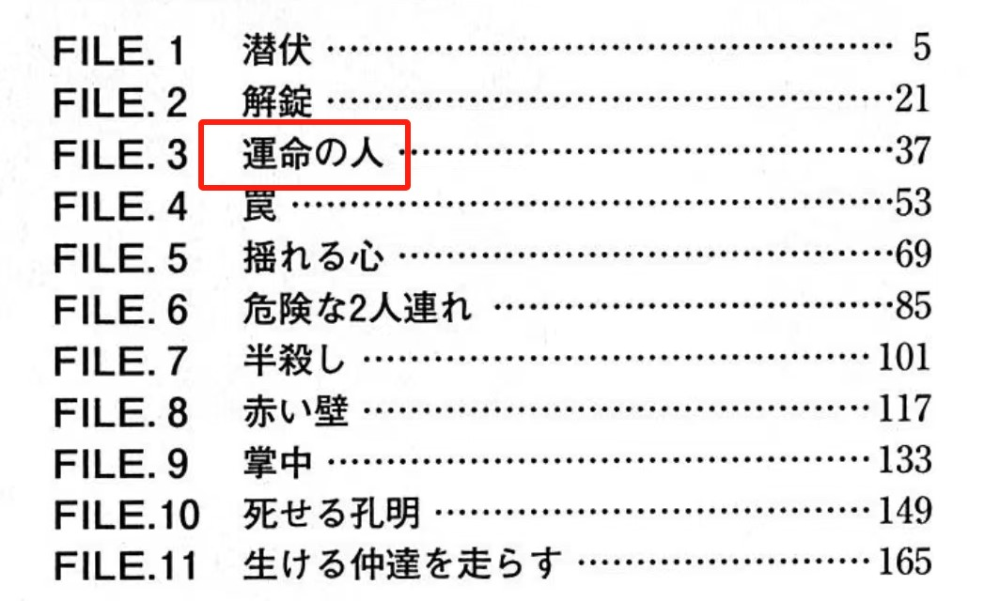
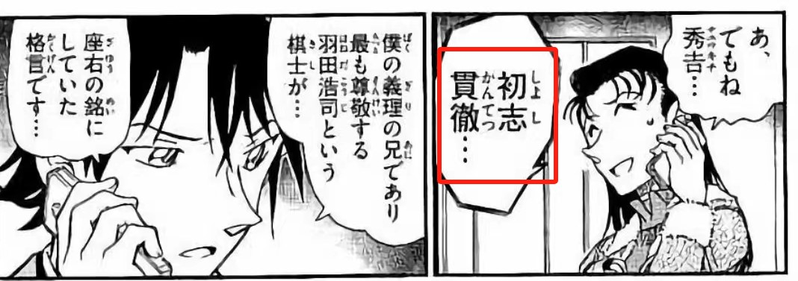
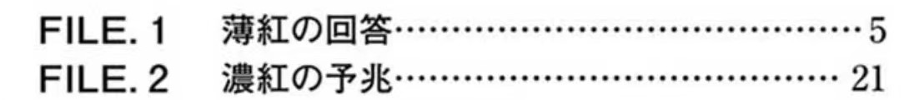

本来短期内不想再分析了，但是抱着回归推理初心的心情重新看了漫画后，发现和推导出的信息量爆棚，实在没有办法一直堆积着。暂时就先从老朋友伦敦篇着手，就其中涉及到的一些内容做点我个人的全新解读。
【半年内，绝对不再发帖了！ 】
】
【半年内，绝对不再发帖了！
】一、伦敦贵妇的身份解析
万物起源伦敦篇，伦敦起源英贵妇。这名提供小五郎一行骗吃骗喝（大雾）的贵妇有钱有闲，名叫戴安娜·金斯顿，疑为英王室成员，养着一只名叫维纳斯的猫。漫画里透露的就这些内容。 表面上看，贵妇仅是一名串场人物，但是她养的猫引起了我的注意。结合最近动森楼大佬对维纳斯隐喻的发现，我直觉这名贵妇不是普通的串场人物。于是去翻了日版漫画，找到了原名——果不其然，是用片假名表达的。 在伦敦篇大量英语出现的情况下，用片假名表达人名，一定有其用意。而仔细看这个名字会发现，前半部的发音DIA与钻石一致（Diana-Diamond），姓谐音国王宝石（King Stone）。DIA直指动森哀的代表符号（DAIYA），国王宝石则不仅暗示钻石是王室所拥有的，更是与福尔摩斯的《王冠宝石案》对应起来，也就是伦敦篇反复提及的《麦泽伦的宝石》。
万物起源伦敦篇，伦敦起源英贵妇。这名提供小五郎一行骗吃骗喝（大雾）的贵妇有钱有闲，名叫戴安娜·金斯顿，疑为英王室成员，养着一只名叫维纳斯的猫。漫画里透露的就这些内容。 表面上看，贵妇仅是一名串场人物，但是她养的猫引起了我的注意。结合最近动森楼大佬对维纳斯隐喻的发现，我直觉这名贵妇不是普通的串场人物。于是去翻了日版漫画，找到了原名——果不其然，是用片假名表达的。 在伦敦篇大量英语出现的情况下，用片假名表达人名，一定有其用意。而仔细看这个名字会发现，前半部的发音DIA与钻石一致（Diana-Diamond），姓谐音国王宝石（King Stone）。DIA直指动森哀的代表符号（DAIYA），国王宝石则不仅暗示钻石是王室所拥有的，更是与福尔摩斯的《王冠宝石案》对应起来，也就是伦敦篇反复提及的《麦泽伦的宝石》。
《王冠宝石案》主要讲的是福尔摩斯如何依靠虚实诡计为王室追回女王王冠上的宝石的故事。根据这个案件梗概，再看贵妇的行为，她真得只是因为那只猫碰巧跑到小五郎面前就要奖励毛利一行人伦敦游吗？恐怕另有不便与外人道的隐情，只不过目前隐情尚未揭露。
大胆猜测一下。目前后续情节中与伦敦篇沾边的，仅有赤井玛丽（在泰晤士河变小落水，还有亲眼目睹了小柯在网球场表现的实况转播）。玛丽和务武均效力于英军情六处MI6，与CIA的选人标准不同的是，MI6长期都以出身上流社会且毕业于名校（主要是牛津与剑桥）的青年才俊作为首选对象，像邦德就是一直以来的形象代表。虽然现在的情况发生了变化，但73的参考应该还是传统向的。以此为标准，可见赤井夫妇的身份绝不是普通英国公民，尤其是玛丽，作为一名日英混血，其母家极有可能出身上层。如果是这样的话，结合哀在动森中冠以DIA的标签，以及伦敦篇对MISSGLASS冠以QUEEN的暗示，和名柯一直以来对哀女王的评价，可以推测，爱莲娜与玛丽的母家也许就是这个金斯顿家族。而这个家族派人来试探毛利小五郎，也许就是借机想找出能找到他们丢失的宝石（哀）的最佳人选。
大胆猜测一下。目前后续情节中与伦敦篇沾边的，仅有赤井玛丽（在泰晤士河变小落水，还有亲眼目睹了小柯在网球场表现的实况转播）。玛丽和务武均效力于英军情六处MI6，与CIA的选人标准不同的是，MI6长期都以出身上流社会且毕业于名校（主要是牛津与剑桥）的青年才俊作为首选对象，像邦德就是一直以来的形象代表。虽然现在的情况发生了变化，但73的参考应该还是传统向的。以此为标准，可见赤井夫妇的身份绝不是普通英国公民，尤其是玛丽，作为一名日英混血，其母家极有可能出身上层。如果是这样的话，结合哀在动森中冠以DIA的标签，以及伦敦篇对MISSGLASS冠以QUEEN的暗示，和名柯一直以来对哀女王的评价，可以推测，爱莲娜与玛丽的母家也许就是这个金斯顿家族。而这个家族派人来试探毛利小五郎，也许就是借机想找出能找到他们丢失的宝石（哀）的最佳人选。
2024-02-18 07:17 | airxk:艾莲娜玛丽出身贵族没问题，问题是赤井一家到现在还没跟哀相认，还会再增加哀的没见过的亲戚们吗？2024-02-18 07:29 | 九九玉生烟:回复 airxk :应该不会 我甚至认为她的亲戚搞不好是反派2024-02-18 08:37 | 世界上没有真理:我也蠻好奇瑪麗與艾蓮娜的母家是做什麼的，以及東尾瑪利亞的身分，這個小女生的戲份都跟哀綁定，絕對不簡單2024-02-18 08:40 | airxk:回复 九九玉生烟 :啊？那是乌丸莲耶的合作者？所以宫野家才加入了组织这种？2024-02-18 08:53 | 九九玉生烟:回复 airxk :有没有一种可能，乌丸只是爱泼斯坦那样的存在2024-02-18 11:41 | 关三小姐_:这个猜测好浪漫！2024-02-18 12:32 | 贴吧用户_7Q44bC5:这要是剑桥毕业的，恐怕就不是MI6的人了，而是克宫的人了2024-02-18 13:58 | 尼尔斯玻尔Ω:回复 贴吧用户_7Q44bC5 :金菲尔德：什么，在想我的事情？2024-03-31 04:46 | proyekt_rot:回复 贴吧用户_7Q44bC5 :剑桥五杰：什么，在想我的事情？2024-04-04 14:25 | 顽皮鬼才:米6的007，现在真的是007了，0点上班0点下班，每周7天，搬砖都没他们辛苦。

二、六大案件的背后隐喻
首先列一下伦敦篇提及的六大案件，按字母发现顺序分别是：T-N-A-S-U-R
T：市政厅——王冠宝石案
N：Gherkin大楼——跳舞小人
A：伦敦桥跌倒——恐怖谷
S：教堂婚礼——波西米亚丑闻
U：大象城堡车站——身份案（又名新郎失踪案）
R：梅森瓷器店——血字的研究
首先列一下伦敦篇提及的六大案件，按字母发现顺序分别是：T-N-A-S-U-R
T：市政厅——王冠宝石案
N：Gherkin大楼——跳舞小人
A：伦敦桥跌倒——恐怖谷
S：教堂婚礼——波西米亚丑闻
U：大象城堡车站——身份案（又名新郎失踪案）
R：梅森瓷器店——血字的研究
2024-02-18 08:11 | 神话__L星空:好家伙，看来我又要掉几根头发了
蹲
伦敦篇居然还能挖出新东西啊


2024-02-18 07:46 | 墨染诗篇入云间:文吧真的卧虎藏龙2024-02-18 08:35 | 黑羽风若:万物起源不是白叫的
1. 恐怖谷
关于六起案件的表意，即内含的福尔摩斯名台词与本案谜底的关系，正篇里非常清楚，本文不再赘述。本文的目的则是要挖掘73选择这6起案件的背后真意。上述的顺序是字母发现顺序，但实际上，真正的顺序是A-T-N-A-S-U-R。也就是恐怖谷才是这个顺序的最早开启案。而恐怖谷出现的篇章就在《LOVE是0》这一话！（其余的案件都在下一话《去问福尔摩斯》中，可见，73单独把这个故事拿到前面来是有意为之）
《恐怖谷》讲的是一名被黑帮追杀的美国侦探逃到英国后，反杀了追杀者并调换身份制造自己死亡的假象，被福尔摩斯勘破，在接受福尔摩斯的建议再次逃亡时被最终干掉的案件。干掉他的不是别人，正是莫里亚蒂教授，而这起案件也被称为福莫的首次非正面交锋。
可以看到，福尔摩斯在《恐怖谷》实际是以失败告终的。而在伦敦篇，标志着这起失败的镜头设置的极为巧妙——小柯在桥上跌倒并发现了恐怖谷的字样，而这座桥正是促使SR表白前相互追逐的桥！ 柯被恐怖谷绊倒的突出特写。
《恐怖谷》，伦敦篇中唯一享受特出待遇的案子。 追逐名场面，一模一样的桥栏杆。
关于六起案件的表意，即内含的福尔摩斯名台词与本案谜底的关系，正篇里非常清楚，本文不再赘述。本文的目的则是要挖掘73选择这6起案件的背后真意。上述的顺序是字母发现顺序，但实际上，真正的顺序是A-T-N-A-S-U-R。也就是恐怖谷才是这个顺序的最早开启案。而恐怖谷出现的篇章就在《LOVE是0》这一话！（其余的案件都在下一话《去问福尔摩斯》中，可见，73单独把这个故事拿到前面来是有意为之）
《恐怖谷》讲的是一名被黑帮追杀的美国侦探逃到英国后，反杀了追杀者并调换身份制造自己死亡的假象，被福尔摩斯勘破，在接受福尔摩斯的建议再次逃亡时被最终干掉的案件。干掉他的不是别人，正是莫里亚蒂教授，而这起案件也被称为福莫的首次非正面交锋。
可以看到，福尔摩斯在《恐怖谷》实际是以失败告终的。而在伦敦篇，标志着这起失败的镜头设置的极为巧妙——小柯在桥上跌倒并发现了恐怖谷的字样，而这座桥正是促使SR表白前相互追逐的桥！ 柯被恐怖谷绊倒的突出特写。
《恐怖谷》，伦敦篇中唯一享受特出待遇的案子。 追逐名场面，一模一样的桥栏杆。
2024-02-18 11:34 | 咕咕188:如果这个算福尔摩斯第一次失败的话，会不会对应初遇论，在樱花班之前有一次失败的推理。2024-02-18 11:44 | 关三小姐_:小柯向毛利告白何尝不是一种输2024-02-20 00:35 | 九九玉生烟:回复 关三小姐_ :这里就是暗喻伦敦篇的福莫PK，福输
如果把伦敦篇表白视作一次大考，则恐怖谷的开端象征着新一的首次失败，而这次胜者正是与莫里亚蒂有着相同发音的毛利兰。
再往前看，兰姐虽然追逐新一的起因在大本钟，而她开始烦恼是否要给新一打电话的场合却在福尔摩斯雕像前。尽管格拉斯认为这不是一个为爱情烦恼的合适地点，但兰姐却在福尔摩斯雕像前自顾自掉下了小珍珠。。。结合后续的情节看，这里的设置可以看作莫里亚蒂对平成年代的福尔摩斯在感情路上所发起的挑战。 福神前的哭泣？
【No，给福神发起的挑战！】
再往前看，兰姐虽然追逐新一的起因在大本钟，而她开始烦恼是否要给新一打电话的场合却在福尔摩斯雕像前。尽管格拉斯认为这不是一个为爱情烦恼的合适地点，但兰姐却在福尔摩斯雕像前自顾自掉下了小珍珠。。。结合后续的情节看，这里的设置可以看作莫里亚蒂对平成年代的福尔摩斯在感情路上所发起的挑战。 福神前的哭泣？
【No，给福神发起的挑战！】
2024-04-04 03:37 | 贴吧用户_G7Q9M2N:这个福尔摩斯像画得好写实（
2. 王冠宝石案
前文提及，该案是为王室寻找宝石的案件。亮点在于，福尔摩斯巧设的诡计。为了引诱窃贼上钩，福尔摩斯特别定制了一个惟妙惟肖的蜡像用于替代自己，并让窃贼陷入心理暗示后，再用自己替换掉蜡像，从而出其不意给凶手抓了个现行。
一言以蔽之，本案的关键在于【真假福尔摩斯】，有趣的是，假扮新一的替身梗，也已经几度出现在了兰姐面前（危命的复活篇、死罗神篇、绀青之拳、天空之树篇），这几乎暗示了兰姐最终会彻底陷入真假新一的混乱陷阱中。
前文提及，该案是为王室寻找宝石的案件。亮点在于，福尔摩斯巧设的诡计。为了引诱窃贼上钩，福尔摩斯特别定制了一个惟妙惟肖的蜡像用于替代自己，并让窃贼陷入心理暗示后，再用自己替换掉蜡像，从而出其不意给凶手抓了个现行。
一言以蔽之，本案的关键在于【真假福尔摩斯】，有趣的是，假扮新一的替身梗，也已经几度出现在了兰姐面前（危命的复活篇、死罗神篇、绀青之拳、天空之树篇），这几乎暗示了兰姐最终会彻底陷入真假新一的混乱陷阱中。
3. 跳舞的小人
本案在名柯中多次提及，被认为是暗示新志初遇的重要案件。该案讲的也是黑帮，美国黑帮老大之女逃到英国与一名绅士结婚，她的前未婚夫锲而不舍追到英国，不断拿暗号提醒女方，就是为了要追回她，只可惜最后悲剧还是发生了。
本案除了暗号知名外，更重要的是展示了一出【三角恋悲剧】，谁与谁先定情，谁与谁后相爱，谁又对谁锲而不舍……暗示得有点过于明显了。
本案在名柯中多次提及，被认为是暗示新志初遇的重要案件。该案讲的也是黑帮，美国黑帮老大之女逃到英国与一名绅士结婚，她的前未婚夫锲而不舍追到英国，不断拿暗号提醒女方，就是为了要追回她，只可惜最后悲剧还是发生了。
本案除了暗号知名外，更重要的是展示了一出【三角恋悲剧】，谁与谁先定情，谁与谁后相爱，谁又对谁锲而不舍……暗示得有点过于明显了。
4. 波西米亚丑闻
福尔摩斯与唯一在意的女人艾琳交锋的名篇。重要的不是故事，而是发生的地点——著名的婚姻圣地St. Bride大教堂，也是唯一的非经兰姐亲手拿到，而是经由有希子给到的提示。关于本段隐喻，吧里已经有大佬发过贴，本文不再详细赘述。只是想感慨一下，73老贼真得很有感情洁癖。。。
福尔摩斯与唯一在意的女人艾琳交锋的名篇。重要的不是故事，而是发生的地点——著名的婚姻圣地St. Bride大教堂，也是唯一的非经兰姐亲手拿到，而是经由有希子给到的提示。关于本段隐喻，吧里已经有大佬发过贴，本文不再详细赘述。只是想感慨一下，73老贼真得很有感情洁癖。。。
2024-02-18 14:56 | 贴吧用户_ae6MQV7:大佬有传送门吗2024-02-18 20:50 | 九九玉生烟:回复 贴吧用户_ae6MQV7 :你可以在吧里用圣大教堂搜一下，去年的一个楼2024-02-19 02:40 | 贴吧用户_ae6MQV7:回复 九九玉生烟 :感谢2024-03-13 08:27 | 陈酿青梅酒:回复 九九玉生烟 :搜不到2024-03-15 22:52 | 酒酒酒治愈灵:楼主，这个婚礼教堂还是草地女王格拉斯以后打算和亚雷斯办婚礼的地方！2024-04-13 09:30 | 怪骨鬼人-:传送门： https://tieba.baidu.com/p/8513507853?pid=148119243651&cid=0#148119243651


5. 身份案
本案之所以又名新郎失踪案，讲的就是为了谋取继女的遗产，继父假扮成另一位青年与女孩恋爱，并在婚礼前失踪的案件。本案的核心当然是假恋情、假婚姻和假新郎，但另一个核心是假新郎的名字，中文名译为霍斯默·安格尔，英文名为Hosmer Angel。是的，就是那个涵义为天使的angel。如果把兰姐等同于angel的话，放在这里的隐喻就是【新娘是假，恋情是假】。
本案之所以又名新郎失踪案，讲的就是为了谋取继女的遗产，继父假扮成另一位青年与女孩恋爱，并在婚礼前失踪的案件。本案的核心当然是假恋情、假婚姻和假新郎，但另一个核心是假新郎的名字，中文名译为霍斯默·安格尔，英文名为Hosmer Angel。是的，就是那个涵义为天使的angel。如果把兰姐等同于angel的话，放在这里的隐喻就是【新娘是假，恋情是假】。
2024-02-18 08:15 | 神话__L星空:每看完你一段分析，我都要皱眉头喝一杯咖啡苦思冥想半天才能懂

6. 血字的研究
一个为爱复仇的故事。重点不是故事本身，而是凶手的名字Jefferson Hope，显然名叫希望，实际无望。提到希望，令人想到一个特写，直球篇的特写，打断兰姐电话的即将搭乘的新干线就是“希望号”，确实是没希望了…
一个为爱复仇的故事。重点不是故事本身，而是凶手的名字Jefferson Hope，显然名叫希望，实际无望。提到希望，令人想到一个特写，直球篇的特写，打断兰姐电话的即将搭乘的新干线就是“希望号”，确实是没希望了…
题外话：关于几个字母的排列组合已经讨论很多了，什么U-R-SATAN（你是撒旦），URSA-NAT（大/小熊星座守护精灵）等，这种只能凭空猜测，没法做更多论证。
三、钟楼时间的变化提示
非常令人意外的大本钟时间点的微妙变化。由于特意放在了封面，所以很难不令人在意。虽然说，日本时间和英国时间差了9个小时，21点就是日本时间的次日6点，而6在西方文化中是个恶魔数字，但是变化的不是时针，而是分针，因此我在此主要考虑分针的变化隐喻。
1. 72卷封面21:37开始
2. 告白实际21:34不到
3. 72卷封二15:00
非常令人意外的大本钟时间点的微妙变化。由于特意放在了封面，所以很难不令人在意。虽然说，日本时间和英国时间差了9个小时，21点就是日本时间的次日6点，而6在西方文化中是个恶魔数字，但是变化的不是时针，而是分针，因此我在此主要考虑分针的变化隐喻。
1. 72卷封面21:37开始
2. 告白实际21:34不到
3. 72卷封二15:00
2024-02-18 08:48 | 平者深黑:英国夏季是夏令时，是UTC+1，所以跟日本是8小时时差，柯南接电话时也说日本才早上5点2024-02-18 08:49 | 九九玉生烟:回复 平者深黑 :难怪，没考虑到这点，谢谢大佬指正。幸好不影响正文分析
1. 72卷封面21:37开始
2. 告白实际21:34不到
本着最基础的思路，我去翻阅了33卷和37卷，发现了一件有趣的事。33卷的重要篇章有两个，一个是染血的情人节，还有一个是干净的香味。而在干净的香味里，就有那段柯子早期著名的自白“我不想再见到她流泪了，即使我可能会在她的心中消失”。
这里完美对映了伦敦篇后，哀直接把这句话拿出来嘲讽柯的片段。【所以73根本不是忘记，他真得在讽刺！】
恰巧干净的香味正好对应在33卷的后半截，与钟盘上的时间点完美对映。73他真得是天才！！！
2024-02-18 08:19 | 神话__L星空:看到这儿越发觉得老贼真是神，之前我一直怀疑老贼真的有想的那么多吗，后来我现在坚信我们分析的肯定没有老贼想的多2024-02-18 08:33 | 九九玉生烟:回复 神话__L星空 :他是真的很神很细，只怪当年年纪小，不知福尔摩斯好2024-02-18 09:01 | 平者深黑:另外，青山在《Otona Fami》2013年6月号的访谈里说过，漫画里伦敦告白的大本钟上的时间是照着当时取材时拍摄的照片画的（時計の時刻も僕が実際に写真を撮った時刻と同じ），他确实有那个时间的照片，不过封面用的并不是青山拍的那张2024-02-18 09:05 | 平者深黑:封面照片各国版本不同，日文版的照片是十点多2024-02-18 09:05 | 九九玉生烟:回复 平者深黑 :这个信息我之前看到过，所以我总觉得最后的选择是故意的2024-02-18 09:12 | 平者深黑:回复 九九玉生烟 :只有简体中文版是9点多，其他版本都不是这个时间，所以我不认为简体中文版的照片有什么特殊分析价值。他总不至于不管日文版来管简体中文版吧？2024-02-18 09:14 | 九九玉生烟:回复 平者深黑 :啊 这个我还真不知道 没看到过别的版本封面2024-02-18 09:21 | 世界上没有真理:用的是分針數字去查卷數應該沒什麼問題，時針不一樣也沒關係吧2024-02-18 09:31 | 九九玉生烟:回复 世界上没有真理 :我不知道其他封面是时针分针全都变，还是只是时针变2024-02-18 13:07 | 幸运的天是我:各个地方封面时间不一样是不是因为时区不一样所以改变了2024-02-18 20:30 | 贴吧用户_0Q8721R:只看漫画是21:34，21点可能是为了凑夕阳的时间，相对固定，34是比较灵活、可以调整的，可能是暗示第34卷的纽约篇？2024-02-18 20:47 | 九九玉生烟:回复 贴吧用户_0Q8721R :我是认真比较过的，应该是34不到，如果是34过的话，会更贴近35……当然，现在封面时间如果废掉的话，正文的时间是否有用意就不好讲了2024-02-18 20:49 | 贴吧用户_0Q8721R:回复 九九玉生烟 :那不是更好吗！纽约篇就是横跨34-35卷。封面可能是编辑选的，但正文的时间肯定是青山画的，藏了东西的概率比封面还大。2024-02-18 21:21 | 世界上没有真理:回复 贴吧用户_0Q8721R :很有道理！看漫畫內容比較準
而37卷开篇则是1200万人质事件的最后一话，标题叫Byebye……也是佐藤果断删掉松田的告白短信，与松田所做的最后告白。而封面小柯COS的就是松田。
有趣的是，72卷封面小柯COS的是告白时的新一。把这个时间放在封面，而非真正告白时间放在封面，我认为暗示了告白新一以及这段恋情最终的走向，就是Bye bye。结合修旅篇SR也是用短信确认关系，基本可以推测，73最后也会把SR这段关系用删除短信的方式处理。当然，某种可能是否也意味着工藤新一像松田阵平一样宣告死亡，也即工藤新一假死论的成立，则有待后续证成。
2024-02-19 10:52 | 贴吧用户_7t3PMVG:cy，感觉短信这里真的是一个伏笔。2024-02-19 11:10 | 九九玉生烟:回复 贴吧用户_7t3PMVG :短信是伏笔，但封面的时间应该是巧合2024-04-18 11:25 | 丶沐璃:留个脚印
3. 72卷封二15:00
本卷的封面如下，开篇是《又困难又麻烦的事件》，指表白，而末篇是《时间的看守者》，本系列结尾有时间不等人的题外话。
此外，封二让新柯拿着指向3点的表盘，之所以说指向的是15:00而非3：00，是因为1200万人质事件最后预计的引爆时间就在15:00，而15，则在满月篇里被明确点出来是恶魔的数字。所以结合整卷标题首尾可以看到，伦敦篇的告白，对于工藤新一的命运走向无异于宣告恶魔现世。
四、非真正表白的明示
关于伦敦篇新一表白的槽点已经很多了，但是总说这不算是真正表白，但原作中73有明确提过什么是真正的告白吗？有的，新志源起樱花篇，樱花源起白林篇。
关于伦敦篇新一表白的槽点已经很多了，但是总说这不算是真正表白，但原作中73有明确提过什么是真正的告白吗？有的，新志源起樱花篇，樱花源起白林篇。
1. 真正的表白——命中注定之人
在正式提及白鸟告白之前，先来分析一下为何白鸟的告白如此具有象征意义。这里面有几个暗示性的关键词：命中注定之人，雪花，熊猫。
（1）Vol. 65 命中注定之人
人物：波本假扮的伤疤赤井、回忆中的赤井、朱蒂老师
事件：银行抢劫案
关键台词：能够同时爱上两个女人，我可没有那么能干
这起案件是伤疤赤井的首次出场，明面上与命中注定之人这个标题毫无关系。但内里却揭示了一个关键信息，赤井秀一在朱蒂与明美之间选择了后者。再看牵涉的案件，明美正是在“银行抢劫案”后死亡的。所以对秀一而言，命中注定之人就是明美。
在正式提及白鸟告白之前，先来分析一下为何白鸟的告白如此具有象征意义。这里面有几个暗示性的关键词：命中注定之人，雪花，熊猫。
（1）Vol. 65 命中注定之人

天气：下雪天人物：波本假扮的伤疤赤井、回忆中的赤井、朱蒂老师
事件：银行抢劫案
关键台词：能够同时爱上两个女人，我可没有那么能干
这起案件是伤疤赤井的首次出场，明面上与命中注定之人这个标题毫无关系。但内里却揭示了一个关键信息，赤井秀一在朱蒂与明美之间选择了后者。再看牵涉的案件，明美正是在“银行抢劫案”后死亡的。所以对秀一而言，命中注定之人就是明美。
（2）Vol. 67 赤色与13的暗示
关键词：雪山、跳舞小人
人物：伤疤赤井、冲矢昴
事件：寻找13年前12月29日雪山遇难的真相
伤疤赤井第二次出现就在本案中。与第一起案件重叠的信息出现，那就是【雪与赤色】。赤色暗示与赤井秀一相似处境的命中注定之人的选择，而雪就是那个提示。同时，13年前，这个崭新的提示信息出现。
此后，伤疤赤井的提示任务完成，正式下线。
关键图：伤疤赤井所带帽子的LOGO——既像雪花，又像星光，同时也像米花的【米】字。如果这个【米】字是星光或雪花的指代，则可以理解为什么柯在《与黑衣组织的再会篇》中要给哀起【花】酱的代称了。二者共同构成了【米花】。
关键词：雪山、跳舞小人
人物：伤疤赤井、冲矢昴
事件：寻找13年前12月29日雪山遇难的真相
伤疤赤井第二次出现就在本案中。与第一起案件重叠的信息出现，那就是【雪与赤色】。赤色暗示与赤井秀一相似处境的命中注定之人的选择，而雪就是那个提示。同时，13年前，这个崭新的提示信息出现。
此后，伤疤赤井的提示任务完成，正式下线。
关键图：伤疤赤井所带帽子的LOGO——既像雪花，又像星光，同时也像米花的【米】字。如果这个【米】字是星光或雪花的指代，则可以理解为什么柯在《与黑衣组织的再会篇》中要给哀起【花】酱的代称了。二者共同构成了【米花】。
2024-02-19 15:07 | LightW☜:英国国旗也是米字😂2024-02-19 21:38 | 九九玉生烟:回复 LightW☜ :所以哀是英伦之花好像也没什么问题
（3）Vol. 66 樱花凋零&樱花绽放
关键词：回忆
人物：白鸟、佐藤、小林老师、凶手
事件：寻找樱花手环制作者
关键台词：那个可是改变了我人生的命中注定之人啊！ 我这里特地选用了日语，可以看到在命定之人的表达上，原文和65卷的标题是一模一样的。
关键词：回忆
人物：白鸟、佐藤、小林老师、凶手
事件：寻找樱花手环制作者
关键台词：那个可是改变了我人生的命中注定之人啊！ 我这里特地选用了日语，可以看到在命定之人的表达上，原文和65卷的标题是一模一样的。
本案仅接着65卷出现，算是明示了“命中注定之人”的重要性。这个系列里，白鸟对童年樱花手环制作者的记忆错位，成为了樱雪错位论，和新志初遇论的启发性案件。相关理论已经有很多大佬开贴了，这里也不再细说。只补充说明两点：
一是凶手制作的雪花手环的确是73刻意而为，并不是凶手不会做樱花手环（她的储物柜中做的全是樱花手环），也就是说73为了让小柯在封面手捧雪花而着意包的那盘饺子； 看上去似乎是为了COS白鸟，实则为了凸显标题《樱花凋零》。
一是凶手制作的雪花手环的确是73刻意而为，并不是凶手不会做樱花手环（她的储物柜中做的全是樱花手环），也就是说73为了让小柯在封面手捧雪花而着意包的那盘饺子； 看上去似乎是为了COS白鸟，实则为了凸显标题《樱花凋零》。
2024-03-13 08:43 | 陈酿青梅酒:刷下来一半以为那两个杯子是穿了吊带环的大腿2024-03-29 08:37 | 林夕劫掠队长💕:回复 陈酿青梅酒 :今天的贴吧就看到这里
二是白鸟本来要去看的电影是《白壁》，讲述的是登雪山的故事，一方面提示了67卷的伤疤赤井第二案，另一方面也是为了与65卷的赤壁案形成对比，可见，赤壁中也有埋藏的信息。
赤壁这卷的封面就是【红中夹着白】。
赤壁之谜先放在一边，接下来看白鸟归林的后续。
赤壁之谜先放在一边，接下来看白鸟归林的后续。
2024-02-18 09:16 | 贴吧用户_JSMUayt:红色的外表下隐藏着白如雪花的真相🤔
（4）Vol. 68 小林老师的恋爱
关键词：烟花、正式表白、替身
人物：白鸟、小林老师、佐藤
事件：根据小林老师的证词寻找真凶
关键台词：放心不下就是喜欢的同义词；早在这些孩子们出生之前，我就一直喜欢着你。 紧跟67卷，白林恋尘埃落地。除了前述句关键台词外，还看到了一个奇怪的信息——熊猫。同样描写警视厅恋爱物语，高佐恋就没有熊猫的出现。是巧合吗？
关键词：烟花、正式表白、替身
人物：白鸟、小林老师、佐藤
事件：根据小林老师的证词寻找真凶
关键台词：放心不下就是喜欢的同义词；早在这些孩子们出生之前，我就一直喜欢着你。 紧跟67卷，白林恋尘埃落地。除了前述句关键台词外，还看到了一个奇怪的信息——熊猫。同样描写警视厅恋爱物语，高佐恋就没有熊猫的出现。是巧合吗？
再看：
（5）Vol. 71 装满回忆的录像带
关键词：13年的思念
人物：白鸟、小林老师、千叶、苗子
事件：找到13年前苗子回应千叶的表白记录
关键台词：我也喜欢你
从白林过渡到千苗的案件中，这只熊猫再次出现了。 【千苗初始录像带篇】 【千叶的初恋情人篇】
早在詹姆斯初登场的案件里，就因为警车的黑白色，而将之比喻为熊猫。那这只熊猫有什么暗喻吗？
（5）Vol. 71 装满回忆的录像带
关键词：13年的思念
人物：白鸟、小林老师、千叶、苗子
事件：找到13年前苗子回应千叶的表白记录
关键台词：我也喜欢你
从白林过渡到千苗的案件中，这只熊猫再次出现了。 【千苗初始录像带篇】 【千叶的初恋情人篇】
早在詹姆斯初登场的案件里，就因为警车的黑白色，而将之比喻为熊猫。那这只熊猫有什么暗喻吗？
2024-02-18 20:34 | 贴吧用户_0Q8721R:熊猫形象好像在日本挺火的，也不能排除巧合的可能……2024-02-18 20:44 | 九九玉生烟:回复 贴吧用户_0Q8721R :不是巧合哦，因为我是从18卷一点一滴看到72卷的2024-02-18 20:50 | 贴吧用户_0Q8721R:回复 九九玉生烟 :厉害……要是黑白熊猫本身能和“真正的命定之人”联系上，那就更锤了

有的。是Vol.60里那个被叫做黑白君的人——江户川柯南。也就是说，与高木等JC不同，柯子是更类似白鸟、千叶那样认不出童年相识的命定之人的那类人。
而【黑白君】案也是冲矢昴登场第一案。进一步隐喻大小银弹在命定之人选择上遇到的相同困境。
2024-02-19 04:24 | 贴吧用户_GtyRyb2:补一点，柯南还有一次提到黑白分明是在File11022024-04-04 04:00 | 贴吧用户_G7Q9M2N:也就是说，感情线中的熊猫形象代表了恋情的主人公无法分清情感的对象？
而承接白林的千苗，除了强化13年前这个信息外，不但进一步将范围限缩到了帝丹小学内，与时光胶囊篇的时间、地点对应，也在定情篇Vol. 96《交通女警连环杀人案》中引入了新的信息——星星。
值得注意的是，定情篇里并没有熊猫出现，而是柯子本人亲自出演了“黑白君”。（我第一次翻漫画的时候还默默吐槽过这件衣服有点怪，当明确了黑白君的涵义后，真得想大吼一声，柯子泥好帅啊！ ）
谁懂啊，在明确了黑白君的涵义后，柯本人亲自唱着“小星星”的画面突然闪现，那种内心无法言喻的感动！
）
谁懂啊，在明确了黑白君的涵义后，柯本人亲自唱着“小星星”的画面突然闪现，那种内心无法言喻的感动！

值得注意的是，定情篇里并没有熊猫出现，而是柯子本人亲自出演了“黑白君”。（我第一次翻漫画的时候还默默吐槽过这件衣服有点怪，当明确了黑白君的涵义后，真得想大吼一声，柯子泥好帅啊！
）
谁懂啊，在明确了黑白君的涵义后，柯本人亲自唱着“小星星”的画面突然闪现，那种内心无法言喻的感动！
2024-02-18 07:31 | 世界上没有真理:這篇好神啊！這首歌現在聽來2024-02-18 09:58 | hoshixinyiji:我去，鸡皮疙瘩起来了。2024-02-19 10:41 | QuantumEntangl:我去，真神2024-02-26 09:46 | 2014只蝴蝶飞过:小柯唱小星星跑调了吗2024-02-27 04:23 | 冰洁圣天:有点头皮发麻了....2024-02-29 20:50 | 贴吧用户_7448Xat:请问小星星是啥梗呀2024-03-05 13:21 | Yao_CPT:回复 贴吧用户_7448Xat :志保就是星星喔(hoshi→shiho)2024-03-18 23:12 | 笑面hwh:回复 2014只蝴蝶飞过 :2024-03-31 12:19 | 暗蓝heart:回复 贴吧用户_7448Xat :志保读作shi ho，星星读作ho shi


综合上述分析可以看到，白鸟归林在工藤新一寻找命中注定之人道路上的开创及标志性意义。而在这个篇章中，73更是借哀之口明确了，什么是正式告白！不出所料，这点与我此前在《以白2的情节铺陈为参照浅析经典三角恋的创作规律之于名柯的映射》所作的分析，算是对应上了。当然，根据日版原话，更为贴切的应该是“早在孩子们出生之前，我对你就抱有恋爱这种事”，不过无论怎样翻译，都不会是伦敦篇那种模棱两可四六不着调的涵义。由此可见，不论如何解释，伦敦篇的告白就不是73心中的正式告白，自工藤新一的初吻保住后，他的告白也保住了。。。（大概）
dd
我怀疑这个世界其实是一群巨大的天才组成的
九九大我絕對不是想催更，但我記得您好像有說過看死羅神用哀的視角去看看的很不舒服，所以想寫一篇文來著，您還記得嗎？
2024-02-18 08:31 | 九九玉生烟:虽然记得，但坚决不写2024-02-18 08:32 | 世界上没有真理:回复 九九玉生烟 :哈哈哈哈哈!2024-02-18 08:47 | 黑羽风若:回复 九九玉生烟 :这个可以有2024-02-18 11:30 | 贴吧用户_GMSD67V:回复 九九玉生烟 :侦探是游走于黑与白之间的不能变成白色也不能变成黑色。柯南喜欢入局玩，所以青山安排江户川柯南下场扮演黑白君并不奇怪。实际上和江户川柯南这个身份对应的是shrry，只是shrry现在以灰原哀的身份活动。
时隔多年又看到大佬分析伦敦篇
2024-02-18 08:33 | 九九玉生烟:我这篇其实很多地方就是在打当年自己的脸2024-02-18 08:40 | 贴吧用户_QaCb6EK:不过也不能都怪我，老贼真得拖，很多线索不到后面都看不明白
回复 九九玉生烟 :九九谦虚，之前那篇在当时的信息来看已经非常厉害了2024-02-18 08:45 | 世界上没有真理:回复 九九玉生烟 :太謙虛啦!那篇是在2014年寫的，當時就能抓到青山的思路很不簡單了

最后，再回来说一下赤壁与白壁。白壁的隐喻已经很清晰了，代表了雪色，也即哀。那么赤壁代表什么呢？
Vol. 82的标题首尾非常有意思，分别是铁壁、赤女，连起来也就意味着，赤壁代表的是名为赤女的“赤色恶魔”。虽然这个案子中，兰姐令人印象深刻，但也不能就此说，赤壁即为兰姐。尽管在“赤色恶魔”一话里，柯子罕见地因为兰姐的半裸状态贡献了可以染红墙壁的血量（bushi）。 不过，结合赤壁里的诡计可以这样理解：因为柯南是黑白君，所以中间的黑白椅子就代表他本人，而椅子的做法代表他本人的选择。根据先白再黑的路子，白位对赤壁，黑位对白壁，也就是说，柯南本人先选择的是赤女，再选择雪女……好像对上了呢。
Vol. 82的标题首尾非常有意思，分别是铁壁、赤女，连起来也就意味着，赤壁代表的是名为赤女的“赤色恶魔”。虽然这个案子中，兰姐令人印象深刻，但也不能就此说，赤壁即为兰姐。尽管在“赤色恶魔”一话里，柯子罕见地因为兰姐的半裸状态贡献了可以染红墙壁的血量（bushi）。 不过，结合赤壁里的诡计可以这样理解：因为柯南是黑白君，所以中间的黑白椅子就代表他本人，而椅子的做法代表他本人的选择。根据先白再黑的路子，白位对赤壁，黑位对白壁，也就是说，柯南本人先选择的是赤女，再选择雪女……好像对上了呢。
2024-02-19 03:06 | 嚇趴:臥朝，原來還能有這種解讀，赤壁黑白椅白壁，讚讚讚2024-02-26 12:52 | 即将02的废物月:白色先手，黑色后手。。。。鸡皮疙瘩起来了2024-03-16 09:10 | QuantumEntangl:赤女难道是赤 裸的女人
别挖了别挖了，本来sr糖就不多
2024-02-18 08:26 | SparkFeeling:哈哈哈2024-02-18 10:30 | 贴吧用户_aAKe71W:再挖下去各位列文虎克叫对家怎么活啊
期待
gkd
九九！!！!
我很记得你的0 is star，前几天才回顾了一次
cy
cy
万物起源伦敦篇，以及超强的九九玉生烟
日文版的72卷封面照片的大本钟时间，看上去是10:17左右
叶汪汪写过一篇《【柯研社】宝藏资料推荐系列02-柯南漫画百科》，里面整理了各版本的72卷封面时间，因为带链接会被吞，所以请自行在银弹的网站上搜标题吧
叶汪汪写过一篇《【柯研社】宝藏资料推荐系列02-柯南漫画百科》，里面整理了各版本的72卷封面时间，因为带链接会被吞，所以请自行在银弹的网站上搜标题吧
2024-02-18 09:45 | 九九玉生烟:谢谢，看来老贼没有那么逆天哈哈哈哈2024-02-18 11:24 | 甜甜圈🌈✨:cy2024-02-18 20:00 | 扬帆之时:回复 平者深黑 :这个看起来更像是9：52吧2024-02-18 20:33 | 无所事事😈☜:回复 扬帆之时 :粗的是时针吧，要是细的是时针就是3点52分左右了。粗的是时针就是10点17分左右2024-02-18 20:34 | 无所事事😈☜:回复 扬帆之时 :还有种可能是时针和分钟重叠了，日版的图很模糊，看不太清2024-02-18 21:01 | 扬帆之时:回复 无所事事😈☜ :我看细得像根线的指针像是秒针，时针和分针好像重叠了2024-02-18 21:12 | 平者深黑:回复 九九玉生烟 :九九老师可以看一下私信吗？2024-02-18 21:17 | 九九玉生烟:回复 平者深黑 :嗯嗯2024-02-18 22:00 | 平者深黑:回复 扬帆之时 :大本钟没有秒针2024-02-18 22:08 | 扬帆之时:回复 平者深黑 :哦，那就没有问题了，应该是10：17
在预言家楼里坐会儿，五年后来验证🙏🙏
又是可恶的伦敦篇
這樣看來伏筆真多，尤其是倫敦篇，但比較好奇老賊該怎麼回收伏筆？埋伏筆很簡單最難的是怎麼回收伏筆讓觀眾有恍然大悟的感覺
伦敦篇又双叒叕向我们证明了它的“含金量”
先看看
暖贴，
虽然不知道有没有参考价值，这个是1000话的纪念封面，时间是5：20。
虽然不知道有没有参考价值，这个是1000话的纪念封面，时间是5：20。
2024-02-18 20:45 | 九九玉生烟:幸好不是中文版哈哈哈哈2024-02-18 21:18 | 南英的茶馆:噗 确实
好奇伦敦篇的姐妹纽约篇，这章也有很多伏笔和烟雾弹，不知道老贼会不会填
哇，又见大佬分析，赞赞
大佬们的分析不断拔高我对青山刚昌理解的上限……，怎么世界上有那么多天才
最后的最后，藉由黑白君与星星的关系，突然又联想到了万恶的樱花篇，因而做个不负责任的联想。
通过兰姐做的樱花折纸，小新一想到了圣诞树上的星星折纸。 【星星折纸与樱花折纸，这里有个非常鲜明的对比】
【星星折纸与樱花折纸，这里有个非常鲜明的对比】
由于樱花篇对应了儿童诱拐案，那么折纸与诱拐之间是否存在着某些关联呢？
啊~折纸~等等，突然想起了诱拐四件套：纵火、诱拐、暗号、纸飞机。（Vol. 61） 本案是工藤新一与冲矢昴之间的第一次推理交锋，亦可以看作与两大银弹关联的重要一案。
在这个案件中，【纸飞机+暗号+诱拐】成为了关键信息。
通过兰姐做的樱花折纸，小新一想到了圣诞树上的星星折纸。
由于樱花篇对应了儿童诱拐案，那么折纸与诱拐之间是否存在着某些关联呢？
啊~折纸~等等，突然想起了诱拐四件套：纵火、诱拐、暗号、纸飞机。（Vol. 61） 本案是工藤新一与冲矢昴之间的第一次推理交锋，亦可以看作与两大银弹关联的重要一案。
在这个案件中，【纸飞机+暗号+诱拐】成为了关键信息。
提到纸飞机，今年年初的新系列里，它又来了，带着更为明确的儿童诱拐案来到了我们面前。
这次的信号包括：纸飞机、暗号、野猫 而附近的野猫这个信息，则正好出现在伦敦篇之后的第一起案件——Vol.72里的《博士诱拐案》里，真相帝元太的手机屏保图片正是“附近的野猫”。
在这起案件中，柯南差点解救失败，不幸被绑。 至此，相关线索已经形成了某种闭环。
这次的信号包括：纸飞机、暗号、野猫 而附近的野猫这个信息，则正好出现在伦敦篇之后的第一起案件——Vol.72里的《博士诱拐案》里，真相帝元太的手机屏保图片正是“附近的野猫”。
在这起案件中，柯南差点解救失败，不幸被绑。 至此，相关线索已经形成了某种闭环。
结合纸飞机案的手机屏幕特写，可得几个关键要素：【纵火、绑架（即诱拐）、交通肇事、纸飞机】，其中根据最新系列中关于纸飞机折叠的特写，可以将【纸飞机≈折纸】。则可延伸出如下联想：
已知：哀酱校园纵火——与重要人物结缘的一块拼图；纸飞机——儿童诱拐案；纸樱花——儿童诱拐案；纸星星——圣诞树；黑白君——星星+雪花；虎影猫——柯解救人质被绑；
推测：圣诞前夕，小志保为了逃离被黑组送去美国的命运，可能实施了一起小规模纵火，以干扰监视人的视线。在逃跑过程中结识了黑白君，并折了纸星星送给他，而黑白君则通过纸星星传递暗号与小志保沟通，但不幸被抓。黑组分成两路，一路送小志保离开日本，另一路想拉黑白君去别的地方，但被警方追捕，并发生车祸，黑白君间歇性失忆，小志保失去踪迹。
已知：哀酱校园纵火——与重要人物结缘的一块拼图；纸飞机——儿童诱拐案；纸樱花——儿童诱拐案；纸星星——圣诞树；黑白君——星星+雪花；虎影猫——柯解救人质被绑；
推测：圣诞前夕，小志保为了逃离被黑组送去美国的命运，可能实施了一起小规模纵火，以干扰监视人的视线。在逃跑过程中结识了黑白君，并折了纸星星送给他，而黑白君则通过纸星星传递暗号与小志保沟通，但不幸被抓。黑组分成两路，一路送小志保离开日本，另一路想拉黑白君去别的地方，但被警方追捕，并发生车祸，黑白君间歇性失忆，小志保失去踪迹。
题外话：虽然我此前一直对柯是否有童年失忆的猜测抱有疑惑，但是动森楼大佬推理出的柯脸部受伤的结论确实给我以启发。最重要的是，新柯脸部受伤的封二图正是出现在收录黑白君案的Vol.60中。
不过在收录死罗神的Vol.62的封二中，柯又再度COS了兰姐的受伤，这点难以成为有力证据。只能作为某种猜测。 至此，本分析告一段落。感谢各位大佬的捧场。
以上。
不过在收录死罗神的Vol.62的封二中，柯又再度COS了兰姐的受伤，这点难以成为有力证据。只能作为某种猜测。 至此，本分析告一段落。感谢各位大佬的捧场。
以上。
2024-02-19 02:53 | 世界上没有真理:仔細想想，名柯這部漫畫感覺很像是一部大型初遇漫畫，柯哀初遇情節線索都被分散到各個章節中，讓讀者自己去探索，那麼什麼時候新志初遇情節才會真正展示在讀者面前呢?2024-02-19 05:42 | 九九玉生烟:回复 世界上没有真理 :打了一大段都没了……总体而言我想说，确实要用福尔摩斯的思考逻辑来看名柯会比较有趣2024-02-19 06:12 | 世界上没有真理:回复 九九玉生烟 :好奇九九大是什麼時後發現青山的敘詭的？是2014年那篇倫敦分析文嗎？我還是在m26之後來到文吧才發覺青山藏得這麼深，之前都是柯哀悲觀黨2024-02-19 06:16 | 九九玉生烟:回复 世界上没有真理 :没有，我以前都是用一般漫画连载创作逻辑来分析的，因为我本人是阿婆粉，更喜欢看推理技巧。开始尝试用福尔摩斯的探案方式，还是年初才开始的2024-02-19 06:37 | 世界上没有真理:回复 九九玉生烟 :真的厲害！所以青山的漫畫也有用福爾摩斯的技巧？譬如那個倫敦篇暗號？我發覺那篇暗號很多人都有去試著解讀青山想表達的意思2024-02-19 06:45 | 九九玉生烟:回复 世界上没有真理 :对啊，老贼很擅长暗号和隐喻2024-02-19 07:00 | 世界上没有真理:回复 九九玉生烟 :2024-02-19 10:25 | airxk:除了失忆之外，还有一种可能是思维惯性确实没认出来，比如他一直以为当年丢失的小伙伴是个男孩子，这一点早期也铺垫挺多次的，认识哀的人都不会觉得她像男生，但不认识她的路人在她戴帽子的时候几乎都觉得她是男孩子，基于此柯从不怀疑也可以自圆其说，以及日本对初恋的解释是第一次意识到有好感的异性2024-02-19 10:26 | airxk:回复 airxk :也能对上新兰设定，不用全部推翻2024-02-19 10:33 | 世界上没有真理:回复 airxk :這也有可能，其實我也蠻好奇哀到底有沒有記憶，名柯裡感覺不出來2024-02-19 10:44 | airxk:回复 世界上没有真理 :初遇论三种情况，一是失忆，二是错认男生，三是擦肩而过没正面认识，前两种情形哀肯定是记得的，只有第三种情形她可能也不知道有过初遇2024-02-19 10:47 | 世界上没有真理:回复 airxk :有沒有可能有第四種？即哀也失憶，兩人都不記得了？2024-02-19 11:08 | 九九玉生烟:回复 airxk :我之所以推测失忆是因为纸飞机篇里的那个手机截图，里面的信息里有肇事逃逸这条，总觉得不像无的放矢。还有一点，是我认为，相比白林的男方视角，千苗更像女方视角，所以哀失忆的可能不大。2024-02-19 11:09 | 九九玉生烟:回复 世界上没有真理 :蓝色城堡篇里有个最著名的【你最喜欢的暗号】，差不多是新志初遇论最早的论据之一了2024-02-19 11:30 | airxk:回复 世界上没有真理 :不大可能，双方都失忆太偷懒了，一般作品里不会这么设计，一方记得一方忘记是最有戏剧性的2024-03-13 08:05 | 世界上没有真理:回复 九九玉生烟 :好奇九九大認為新一自然遺忘志保的機率多大?有吧友認為新志初遇因為年齡太小所以新一自然遺忘志保，但我這邊傾向新一有失憶劇情，也是因為根據此情節推論出來的2024-03-14 02:11 | 九九玉生烟:回复 世界上没有真理 :这个真不好说。小新一的记忆本来就是薛定谔的，涟漪篇隔了很久才想起来，这里就不能说他是受伤失忆，只能说时间隔太久。但对于四岁第一次推理又能清晰回忆细节，理论上更不符合童年记忆。只能说看作者设定了2024-03-14 02:59 | 世界上没有真理:回复 九九玉生烟 :了解~這確實很吃作者設定

补一点，柯南还有一次提到黑白分明是在File1102
2024-02-19 05:41 | 九九玉生烟:谢谢补充。不过我前面主要是围绕白林和千苗的情节联系起来的黑白君，这一话的黑白君我还没有可以关联的联想
有时候我想73莫非真的想了那么多？那也太牛了
2024-02-19 10:24 | 九九玉生烟:他应该是想得很多，但是能不能圆回来就另说了
柯南作为长篇有一点好，那就是建立了分析的土壤，一些厉害的读者完全可以通过一些线索推理出很多的故事，是否为真，得看73落笔，但推理的过程实在令人无法自拔
预告:最近有几个比较重要(可能)的发现，因为说过半年内不开新帖了，以后相关内容都会在本帖不定时更新。
2024-02-26 04:22 | 世界上没有真理:好的，準時收看，支持九九大！
不知道以下几点能不能算熊猫论的补充。
单行本第48卷的第二个案子，涉及【13年前的事件】和【失忆】这两个要素。事件结束后小兰希望柯南能和自己一起穿熊猫（亲子）装，但是柯南拒绝了。是否说明柯兰（新兰）之间是没有熊猫元素的呢？
这个案子的前一案是柯南花了半天时间才解开哀帮博士想出的暗号。大家可以回忆一下青色古堡案，哀问他“这是你最喜欢的暗号吧”。在此之前柯哀经历的假钞案、大学教授案、足球场案都不涉及暗号，小哀是怎么知道的？如果新志初遇成立，有没有可能是13年前两个人也曾经在一起玩暗号游戏（就如同跳舞的小人那样）而且很有可能当时就是小哀赢了他呢？
还有，48卷单行本的扉页是新一和柯南+一桌子的化学实验用品，而这本书的三个案子（最后一个是水无篇开始）都和化学无关。
单行本第48卷的第二个案子，涉及【13年前的事件】和【失忆】这两个要素。事件结束后小兰希望柯南能和自己一起穿熊猫（亲子）装，但是柯南拒绝了。是否说明柯兰（新兰）之间是没有熊猫元素的呢？
这个案子的前一案是柯南花了半天时间才解开哀帮博士想出的暗号。大家可以回忆一下青色古堡案，哀问他“这是你最喜欢的暗号吧”。在此之前柯哀经历的假钞案、大学教授案、足球场案都不涉及暗号，小哀是怎么知道的？如果新志初遇成立，有没有可能是13年前两个人也曾经在一起玩暗号游戏（就如同跳舞的小人那样）而且很有可能当时就是小哀赢了他呢？
还有，48卷单行本的扉页是新一和柯南+一桌子的化学实验用品，而这本书的三个案子（最后一个是水无篇开始）都和化学无关。
2024-02-28 07:03 | 九九玉生烟:谢谢补充，亲子装这个我也注意到了。当时黑白君的概念还没出来，我的想法是暗示了兰姐与探案啊、寻求真相都没有关系。但是13年和失忆的伏笔可能那会儿已经考虑好了。
后面更新暴论系列：
暴论一：真正的夫妻与“初志贯彻”
这一话出自著名的秀由系列“茶茶宁宁篇”。
本系列收录在89卷，封面圣诞树，封二将棋，可见本系列在这一卷中的重要地位。顺带一提，日版封面比中版封面还要简单粗暴。
暴论一：真正的夫妻与“初志贯彻”
这一话出自著名的秀由系列“茶茶宁宁篇”。
本系列收录在89卷，封面圣诞树，封二将棋，可见本系列在这一卷中的重要地位。顺带一提，日版封面比中版封面还要简单粗暴。
2024-03-03 21:43 | LightW☜:圣诞树上都是星星！2024-03-05 13:17 | Yao_CPT:回复 LightW☜ :我記得日版封面的照片好像有說過都是73拍的2024-03-05 14:02 | Yao_CPT:回复 Yao_CPT :不對我可能記錯了，是有俄羅斯藍貓的那張確定是73拍的，其他照片可能不是2024-03-05 18:51 | 九九玉生烟:回复 Yao_CPT :这个照片是谁拍的我还真没了解过2024-03-05 21:12 | Yao_CPT:回复 九九玉生烟 :之前訪談有看到聊過封面照片，但內容忘了還要再複習XD不過老賊都特意提到了那藏有什麼也挺合理的！2024-03-05 21:21 | 九九玉生烟:回复 Yao_CPT :而且我以前都不知道，提供给各个国家的封面照片居然还会不同，直到再次分析伦敦篇的时候才被告知2024-03-05 22:52 | Yao_CPT:回复 九九玉生烟 :我想應該是日版的照片沒有多國授權的關係所以應該都是各國編輯自己挑的，好像就只有俄羅斯藍貓是青山拍自家的貓有特意授權的樣子😂(現在記憶不可靠要再去翻一下
除了宁茶论之外，本系列主要出现了三个关键信息：折纸、结婚申请书、座右铭。
先来看一下系列目录 而其中涉及的内容分别是：坏心眼的老爷爷（婚姻届）——真正的夫妻（座右铭）——座右铭（折纸） 最令人在意的就是婚姻届为什么填的是工藤新一的名字？
我认为这是本话真正要问的问题，而答案就在后面两话，也就是：和工藤新一组成真正的夫妻的答案，就在座右铭里。
先来看一下系列目录 而其中涉及的内容分别是：坏心眼的老爷爷（婚姻届）——真正的夫妻（座右铭）——座右铭（折纸） 最令人在意的就是婚姻届为什么填的是工藤新一的名字？
我认为这是本话真正要问的问题，而答案就在后面两话，也就是：和工藤新一组成真正的夫妻的答案，就在座右铭里。
而这句座右铭，也就是这个矢志不渝！（又有译为贯彻初心）
而这句话的日文表达则是：初志贯彻！（しょしてっかん）
虽然“初”在此处念しょ，但众所周知，初的训读音包括（はじ.めはじ.めてはつ等）。
但作为人名时，“一”则经常读作（はじめ），例如著名的少年侦探金田一一，就读作（きんだいち はじめ）。
所以，某种程度上，【初≈一】。
结合老爷爷引用的这句话则可以看到，对“初志贯彻”的理解绝对不能受限于表面，而应当看透放在此处的实质。 那么，真正的夫妻，透过字面来看，就是贯彻始终的【一和志】。

等等，这个志是不是令人浮想联翩？虽然“初”在此处念しょ，但众所周知，初的训读音包括（はじ.めはじ.めてはつ等）。
但作为人名时，“一”则经常读作（はじめ），例如著名的少年侦探金田一一，就读作（きんだいち はじめ）。
所以，某种程度上，【初≈一】。
结合老爷爷引用的这句话则可以看到，对“初志贯彻”的理解绝对不能受限于表面，而应当看透放在此处的实质。 那么，真正的夫妻，透过字面来看，就是贯彻始终的【一和志】。
2024-02-29 21:01 | 贴吧用户_7448Xat:nb2024-03-05 13:20 | Yao_CPT:初志就是新志！😆2024-03-05 18:49 | 九九玉生烟:回复 Yao_CPT :实际上我还有一点没有说，我认为新一二字本身就有初始的涵义，但日语苦手，找不到确切对应的依据2024-03-05 18:51 | 世界上没有真理:回复 Yao_CPT :yao大失蹤人口回歸2024-03-05 19:30 | 九九玉生烟:回复 Yao_CPT :说的更暴论一点，就是我认为新一的名字最早就是为了和金田一一这个旧一对打而来，然后老贼联想到了著名作家星新一，再然后才是从新一的字面涵义赋予了其江户川柯南的新的开始2024-03-05 20:52 | Yao_CPT:回复 九九玉生烟 :其實用漢字中文的意思去理解就可以了😉這部分的字義倒是差不多。新不管是新氣象還是初始、也是第一個的意思。初也是代表事物的開始。老賊在玩名字梗的技巧實在是爐火純青啊🤤2024-03-05 21:07 | Yao_CPT:回复 世界上没有真理 :想說這幾個月可能沒什麼新東西，安卓系統又自動解除安裝貼吧…(我裝的是私人apk版本)就沒開了😅2024-03-05 21:20 | 九九玉生烟:回复 Yao_CPT :确实，他考虑的东西是真得多，而且各种梗叠加，总觉得以前太小看他了2024-03-05 21:33 | 世界上没有真理:回复 Yao_CPT :哈哈！原來如此！yao大m27會去看嗎？2024-03-05 22:56 | Yao_CPT:回复 世界上没有真理 :還是一樣等劇透看有沒有柯哀戲我其實挺樂觀的XD不過尤其南姐說什麼這幾年柯南都白看了的劇情讓我很在意啊！老賊到底還藏了多少東西！2024-03-05 22:59 | 九九玉生烟:回复 Yao_CPT :那个好像说是翻译问题。yao老师日语好，您可以看一下日语原文，到底指的是剧本要重看，还是原作要重看2024-03-05 23:15 | Yao_CPT:回复 九九玉生烟 :啊好的的確沒去看原文呢，我再看看！2024-03-06 07:57 | Yao_CPT:回复 九九玉生烟 :看到銀彈的翻譯了，的確是指劇本2024-03-07 22:22 | 图卢兹的幽灵:卧槽，很有说服力2024-03-08 10:56 | season_winds:我靠
而初还有一个读音是はつ，音同八。志的读音し，音同四。
八四之谜，似乎就此解开了呢。 因为“贯彻”本身就有穿透、贯通的意思，再看北斗星号的番号，则可以把当中两个1看作是轨道，左面8代表新一，右面4代表志保，这个番号实际上蕴含着初志贯通的涵义。
八四之谜，似乎就此解开了呢。 因为“贯彻”本身就有穿透、贯通的意思，再看北斗星号的番号，则可以把当中两个1看作是轨道，左面8代表新一，右面4代表志保，这个番号实际上蕴含着初志贯通的涵义。
2024-03-03 21:45 | LightW☜:我天 北斗星的暗号已经被解释出了一吨糖 还有糕手！2024-03-05 12:58 | BLACK-X:稍微补充一点，动森那个贴子也分析过北斗星，这里完整车牌其实是“EF8114”（此系列最后一话扉页），关于车牌号动森楼主认为只有“4”是线索，当时我觉得不太严谨所以稍微（百度百科）查了一下，“EF81”其实是一种列车型号。2024-03-05 12:58 | BLACK-X:我个人的想法是“EF81”整体暂不考虑，剩下的“14”拆分成“1”和“4”或者分隔符“｜”和“4”，后者不影响动森那边的分析过程。2024-03-05 13:02 | BLACK-X:不过当时也提过不知道选EF81这个型号是不是也有什么意义，如果按楼主分析的“初志贯彻”=“8🛤️4”的话就可以解释成为了凑“”初、“志”和“贯彻”的元素选了数字部分以“8”开头且后面有一条铁轨的“EF81”，后面补上了另一条铁轨再加上“4”，也能说通。2024-03-05 18:46 | 九九玉生烟:回复 BLACK-X :动森那个是根据实际存在的北斗号基础上做的分析，我这个则是根据84反过来看北斗号做的分析，均可成立。而且84主要对应的是哀最开始自报的年龄之谜，北斗这里只能说73考虑得非常细致。2024-03-05 21:35 | 世界上没有真理:回复 九九玉生烟 :講到北斗星，這篇章的西村警官時隔二十多年又再m27上出現了，我還是覺得m27一定有什麼，但是目前預告和聲優訪談完全摸不著頭緒2024-03-05 21:38 | 九九玉生烟:回复 世界上没有真理 :m27的剧情基本谜语人，但考虑到有希子和基德同时存在，现在有不少猜测认为会存在变装大战。至于北斗星和初遇论，我认为不会在m27揭示，但可能会作为可以被资深粉丝挖掘的要素隐藏在其中。2024-03-05 21:51 | 世界上没有真理:回复 九九玉生烟 :我也覺得不會在m27揭露初遇，但可能會有線索，變裝這部分很有趣，有看到吧友猜測柯南可能是灰原變的，所以預告上沒灰原2024-03-05 22:03 | 九九玉生烟:回复 世界上没有真理 :对，我还去研究了一下海报，确实有点东西2024-03-06 00:20 | BLACK-X:回复 九九玉生烟 :是的，两种分析其实互不影响，这里主要是想补充一下将“EF81”作为型号后“84”可能的创作思路（第三条回复）。当时是因为动森那边才去查到了“EF81”并且都是关于数字的分析所以顺便提一下。2024-03-06 00:30 | BLACK-X:回复 九九玉生烟 :顺便提一句，不说全部，这类偏细节的东西只要成立一部分的话，个人感觉“细致”都不足以形容73，多少有点“恐怖”....2024-03-06 00:52 | 九九玉生烟:回复 BLACK-X :早前，很多人都喜欢拿巧合去形容一些发现，甚至连姓名梗都不愿意承认。现在才意识到，73是真的有推理作者的意识和自觉的，但大部分读者甚至都不能称为名柯真正的受众2024-03-06 01:13 | 世界上没有真理:回复 九九玉生烟 :光是那個雙鯊論一直被某黨說是巧合又或是狡辯說兩人講的鯊魚是不一樣的意思就很好笑了，她們怎麼不想想為什麼作者要特地安排同個動物做為他們的專屬性呢?還有每次都說柯南連狗都會救救個灰原不稀奇，不然就是說灰原只是給藥工具人的，看了就很無語2024-03-15 23:04 | Yao_CPT:小小提一下8的日文不是はつ是はち，不過日本人常省略把ハ也能代稱8(首字發音跟外型都可)，不影響推理～

另外再补充一下秀由之于新志的几个映射：
1.秀吉交给由美结婚届的时候，就在圣诞节前后。而本卷封面和封二明确了圣诞和结婚之间的联系。 【关键信息：圣诞节、雪夜、7个】
1.秀吉交给由美结婚届的时候，就在圣诞节前后。而本卷封面和封二明确了圣诞和结婚之间的联系。 【关键信息：圣诞节、雪夜、7个】
2024-03-07 22:24 | 图卢兹的幽灵:刚圣快点把圣诞节大活正式端上来额啊啊啊
而本作中对圣诞的两个直接对应，分别出现在本卷的商场篇，和78卷的神秘列车篇。
两篇均与哀的身世直接相关。 其中，铃木号的图像不仅映射了圣诞，也映射了柯子骑士论。
另外，注意丝带的交叉部分，直接对应了该系列的交错篇。而日语中交差即交叉。 对比，可以看出，圣诞的背后是表秀吉里新志的关系。
两篇均与哀的身世直接相关。 其中，铃木号的图像不仅映射了圣诞，也映射了柯子骑士论。
另外，注意丝带的交叉部分，直接对应了该系列的交错篇。而日语中交差即交叉。 对比，可以看出，圣诞的背后是表秀吉里新志的关系。
2024-02-29 21:18 | VP1027:卧槽，难他天
接着更新暴论二：赤壁＝兰
在前述关于白鸟归林的衍生探讨中，本文曾提及白壁＝哀，赤壁＝兰的观点，但是赤壁与兰的联系并没有证成，如下的论证似能达成某种闭环。
赤壁案后，共有两起案件将赤与兰姐直接挂钩，分别是Vol. 79赤面的人鱼，与Vol.82的赤女。先来看一下这两篇的构图↓↓↓ 两幅图里的兰姐与名称都极为突出，73在作画时恨不得直接把名字打在兰姐身上了。
两幅图里的兰姐与名称都极为突出，73在作画时恨不得直接把名字打在兰姐身上了。
再来看这两个名字的涵义。
赤面的人鱼是一只背上镶满了假宝石的乌龟，由于太假了，是基德唯一一次不稀罕盗窃的东西，也是唯一一次基德案件中兰姐与宝物直接接触的情形。 而赤女讲的则是因为老公出轨而捅老公捅到自己浑身都是鲜血的一个砂仁饭。
所以前者的关键词是【假】，后者的关键词是【血】。
在前述关于白鸟归林的衍生探讨中，本文曾提及白壁＝哀，赤壁＝兰的观点，但是赤壁与兰的联系并没有证成，如下的论证似能达成某种闭环。
赤壁案后，共有两起案件将赤与兰姐直接挂钩，分别是Vol. 79赤面的人鱼，与Vol.82的赤女。先来看一下这两篇的构图↓↓↓
再来看这两个名字的涵义。
赤面的人鱼是一只背上镶满了假宝石的乌龟，由于太假了，是基德唯一一次不稀罕盗窃的东西，也是唯一一次基德案件中兰姐与宝物直接接触的情形。 而赤女讲的则是因为老公出轨而捅老公捅到自己浑身都是鲜血的一个砂仁饭。
所以前者的关键词是【假】，后者的关键词是【血】。
按照意象三重定律，若要证明兰姐与赤壁有关，还必须存在一个与赤相关的案例，于是红修篇再度进入我的视野。
首先需要明确的是，73在作品中对红色的描述，一般有三个词：绯色、赤色、红色。
其中，绯色主要用来形容两大银弹：新一和秀一，重点出现在水族馆篇和绯色篇。 可以看到，这里的绯色均读作（ひいろ），与表述英雄的（ヒーロー）发音趋于一致，应当有将大小银弹冠以英雄之名的隐喻。
与黑衣组织再会篇里，哀梦见琴酒对自己说，“用你最喜欢的绯色”，实际已经暗指了哀的“英雄情结”。
首先需要明确的是，73在作品中对红色的描述，一般有三个词：绯色、赤色、红色。
其中，绯色主要用来形容两大银弹：新一和秀一，重点出现在水族馆篇和绯色篇。 可以看到，这里的绯色均读作（ひいろ），与表述英雄的（ヒーロー）发音趋于一致，应当有将大小银弹冠以英雄之名的隐喻。
与黑衣组织再会篇里，哀梦见琴酒对自己说，“用你最喜欢的绯色”，实际已经暗指了哀的“英雄情结”。
赤的常见读法是（あか），而红的训读也有（あか），除此之外，红还可以读作（くれない，べに，こう，もみ）等。由此可见，相比于绯色，赤与红的关系某种程度更为接近，甚或可以等同。而关于红，则令人联想到了著名的红修篇。
值得注意的是，绯色篇所有的绯读音都一样，但红修篇所有的红读音都不一样！
值得注意的是，绯色篇所有的绯读音都一样，但红修篇所有的红读音都不一样！

红修篇总共有六话，其中，“鲜红的天井”里的红读（こう），“红莲的魔物”里的红读（ぐ），“红桧皮”、“红鼠”、“薄红”的红都读（べに），“浓红的预兆”里的红读（くれない）。
但是，除了标题里的红之外，红修篇里还有一处涉及红的地方，就是讲述天狗传说的那部电影——《红の修罗天狗》，这里的红读作（くれない）。
而根据原作里新一对电影的讲解可知，天狗之所以被冠以红色之名，是因为被妖魔之血染红，使得全身都泛着红色。在日文的表述里，这里的红色全部被标为赤色！
由此可以推导出，电影名里读作（くれない）的“红”，其实质就是被血染成的“赤”（あか）！
由此可以推导出，电影名里读作（くれない）的“红”，其实质就是被血染成的“赤”（あか）！
再看红修篇的六话，唯一对应这个读音的“红”，就是最后一话——“浓红的预兆”。
而“浓”读作（こい），“浓红”读作（こいくれない），如果把这个读音进一步拆分，则可看作（こい+くれ+ない），对应的常见词恰是（恋+黄昏+無）！
由此可见，所谓“浓红的预兆”，就是指发生于黄昏的恋情归于虚无的预兆！而根据此话扉页可知，这里发生于黄昏的恋情，就是指兰姐在傍晚的清水寺舞台亲新一这件事！
同时，也进一步印证，兰姐与赤之间的关联！
而“浓”读作（こい），“浓红”读作（こいくれない），如果把这个读音进一步拆分，则可看作（こい+くれ+ない），对应的常见词恰是（恋+黄昏+無）！
由此可见，所谓“浓红的预兆”，就是指发生于黄昏的恋情归于虚无的预兆！而根据此话扉页可知，这里发生于黄昏的恋情，就是指兰姐在傍晚的清水寺舞台亲新一这件事！
同时，也进一步印证，兰姐与赤之间的关联！
2024-03-04 23:31 | Deylen🔯:毛骨悚然，过多的巧合即为合理的真相2024-03-04 23:37 | 明天过年了º:清水寺舞台是黄昏吗，伦敦篇告白倒更像是黄昏2024-03-04 23:51 | 九九玉生烟:回复 明天过年了º :清水寺是下午17:00，伦敦篇是晚上21:002024-03-04 23:56 | 世界上没有真理:回复 九九玉生烟 :倫敦篇是夏天的時候，夏季倫敦日落時間很晚，大概晚上九點到十點之間，所以當時的倫敦其實也能算在黃昏時分2024-03-05 00:02 | 九九玉生烟:回复 世界上没有真理 :不是，追逐的时候天还没黑，告白的时候天就是黑的

相对的，此前，已经论证过哀与雪色与白壁之间的关联。
再看借鉴君名的那个系列《纯白的心情》，其实可以很明显地推测出此处即为哀对柯心意的暗示↓↓↓
再看借鉴君名的那个系列《纯白的心情》，其实可以很明显地推测出此处即为哀对柯心意的暗示↓↓↓
2024-03-05 00:42 | 我就是空气羽毛:这循环论证，神了
@尼福达手工坊 伦敦篇告白是21:34，当时路灯已经亮了。当然，硬要解读为华灯初上也是黄昏，其实也可以。
 红修篇没有直接给出时间点，我是这样推的。
红修篇没有直接给出时间点，我是这样推的。
清水寺的游览关闭时间是18:00，当时世良他们说还有时间想去参观北野天满宫，而后者在九月的闭馆时间是18:00，十月的闭馆时间是17:30，根据服装可以推断，当时案件结束时间应该在17:30之前。 但是天满宫距离清水寺并不近，根据世良和园子的对话可见，按照一般搭电车的方式赶过去可能会来不及。 二者具体有多远我没查到，但红薯上有京都追枫一日游的行程安排，如果是坐车的话，一小时内从天满宫赶到清水寺打卡还是可行的。 综上，我认为，清水寺舞台的时间估计在17:30前的一个小时内。
再看后续工藤离开，马上给学校老师发了一条短信请假。 这里面有几个信息：一是同学们已经结束游览在酒店集合了；二是老师说刚才工藤联系我们，所以这两件事的时间是集中在一起的。
但是，根据后面服部要求坐在摩托车上的小柯不要看手机发短信可知，小柯是不可能坐上车后再联系的老师。所以，一定是刚从清水寺离开还没坐上摩托车时就已经用工藤的声音和老师取得了联系。 所以上述几个信息结合在一起，我认为清水寺舞台的时间大概率发生在下午4~5点左右。再加上秋天背景和京都所在的纬度，那个时间段视作黄昏应当是合理的。
清水寺的游览关闭时间是18:00，当时世良他们说还有时间想去参观北野天满宫，而后者在九月的闭馆时间是18:00，十月的闭馆时间是17:30，根据服装可以推断，当时案件结束时间应该在17:30之前。 但是天满宫距离清水寺并不近，根据世良和园子的对话可见，按照一般搭电车的方式赶过去可能会来不及。 二者具体有多远我没查到，但红薯上有京都追枫一日游的行程安排，如果是坐车的话，一小时内从天满宫赶到清水寺打卡还是可行的。 综上，我认为，清水寺舞台的时间估计在17:30前的一个小时内。
再看后续工藤离开，马上给学校老师发了一条短信请假。 这里面有几个信息：一是同学们已经结束游览在酒店集合了；二是老师说刚才工藤联系我们，所以这两件事的时间是集中在一起的。
但是，根据后面服部要求坐在摩托车上的小柯不要看手机发短信可知，小柯是不可能坐上车后再联系的老师。所以，一定是刚从清水寺离开还没坐上摩托车时就已经用工藤的声音和老师取得了联系。 所以上述几个信息结合在一起，我认为清水寺舞台的时间大概率发生在下午4~5点左右。再加上秋天背景和京都所在的纬度，那个时间段视作黄昏应当是合理的。
太精彩了
暴论三：73三十周年的SR图绘就是为了解构SR的
先来重温一下这张令SR士气大振的图↓↓↓ 图中，73双手抚摸小新兰的头，嘴里说着“好孩子，好孩子”，小新一是一脸不屑，小小兰则是看向73，脸上带着微笑，还有稍许红晕。可以看到，此处的场景里，小新一和小小兰的态度迥异，而73的话语里则有安抚之意。
再看下面这张截图↓↓↓ 出自樱花篇中的新一BOY章，此处，抚摸两孩子头的是老师，小新一对老师的态度是极其不屑，小小兰则是面向老师，虽然目中含泪，但眼神已然被折服。而老师的话语里则是：“好啦好啦，你们俩不要再吵啦！”
可以看到，虽然存在一些差别，但整体而言，73的三十周年绘图与樱花篇的这张图在构图、场景和人物表情上都非常相似，疑似脱胎于此。
那么接下来，就要分析一下，为什么我认为73绘制这个场景是在三十周年宣告对SR的解构。
先来重温一下这张令SR士气大振的图↓↓↓ 图中，73双手抚摸小新兰的头，嘴里说着“好孩子，好孩子”，小新一是一脸不屑，小小兰则是看向73，脸上带着微笑，还有稍许红晕。可以看到，此处的场景里，小新一和小小兰的态度迥异，而73的话语里则有安抚之意。
再看下面这张截图↓↓↓ 出自樱花篇中的新一BOY章，此处，抚摸两孩子头的是老师，小新一对老师的态度是极其不屑，小小兰则是面向老师，虽然目中含泪，但眼神已然被折服。而老师的话语里则是：“好啦好啦，你们俩不要再吵啦！”
可以看到，虽然存在一些差别，但整体而言，73的三十周年绘图与樱花篇的这张图在构图、场景和人物表情上都非常相似，疑似脱胎于此。
那么接下来，就要分析一下，为什么我认为73绘制这个场景是在三十周年宣告对SR的解构。
首先，必须要承认，我曾经关于樱花篇的解读是存在一定的误读的（详见白2楼）。原因在于，我陷入到了73设置的心理诡计里了。
关于小新对小小兰的微笑一见钟情的场景，看似描述了兰视角和新视角两个版本，实际上是三个版本！
从左至右分别是：兰GIRL章、新一BOY章、以及新一BOY章最后的回忆桥段↓↓↓ 经比较可以看到，三处的场景描绘看似一致，实际存在着不小差异。
第一处：兰问新，你想要樱花的话，刚才做好的这个就给你好了。在兰篇，强调的是【这个】，而在新篇，强调的是【想要】。可以看到，兰篇里，兰认为新想要的是自己手头做的这个名牌；而新篇里，兰认为新主要是想要一个名牌，而自己手头正好有一个。
第二处：兰问新的名字。兰篇里，兰问：“你的名字是…？”新回：“工…工藤新一…樱花班！”而在新篇里，兰问：“你的名字？”新回：“工、工藤新一樱花班！”最后的新回忆篇里，兰问：“你的名字是…？”新回：“工、工藤新一…樱花班！！”可以看到，三处的差别非常大。兰篇里，兰的问题是带点迟疑的，新的回答也带着迟疑，感觉双方因为刚才的争吵，都带着犹疑和小心翼翼。新篇里，兰的问题毫不迟疑，而新只是有一点点吃惊，很快又恢复了镇定。在新回忆篇，兰的问题也带着迟疑，新的回答略有一点迟疑，但最后提到樱花班时却格外激动。很明显，三个场景的情绪波动是不同的。
第三处：兰把新一的名字填好以后，展示给新看。兰篇里，兰说：“好了！做好啦！！”新篇里，兰说：“好的做好啦！！”新回忆篇里，兰说的也是：“好了！做好啦！！”可以看到，兰篇和新回忆篇中的表达是一样的，语气中有很明显地兴奋感，相较而言，新篇里的兰就没有那么兴奋。
第四处：面对写好名牌的兰，新的反应也很不一样。兰篇里的新有点小脸红和小惊讶，新篇里的新有点小脸红但表情很惊讶（嘴张得比较大），新回忆篇里的新则是满脸通红。
第五处：兰要求新不要再叫自己爱哭鬼了，在兰篇里表示：“我…才不是什么爱哭鬼呢！”，新篇里表示：“我、才不是什么爱哭鬼…”前者体现出，兰内心对于被叫爱哭鬼的愤怒，而后者体现出，兰被叫爱哭鬼的抗拒。
除此之外，老师摸头安抚与小小兰的微笑都只在一个场景中体现，因此是否确实存在，有待进一步分析。
关于小新对小小兰的微笑一见钟情的场景，看似描述了兰视角和新视角两个版本，实际上是三个版本！
从左至右分别是：兰GIRL章、新一BOY章、以及新一BOY章最后的回忆桥段↓↓↓ 经比较可以看到，三处的场景描绘看似一致，实际存在着不小差异。
第一处：兰问新，你想要樱花的话，刚才做好的这个就给你好了。在兰篇，强调的是【这个】，而在新篇，强调的是【想要】。可以看到，兰篇里，兰认为新想要的是自己手头做的这个名牌；而新篇里，兰认为新主要是想要一个名牌，而自己手头正好有一个。
第二处：兰问新的名字。兰篇里，兰问：“你的名字是…？”新回：“工…工藤新一…樱花班！”而在新篇里，兰问：“你的名字？”新回：“工、工藤新一樱花班！”最后的新回忆篇里，兰问：“你的名字是…？”新回：“工、工藤新一…樱花班！！”可以看到，三处的差别非常大。兰篇里，兰的问题是带点迟疑的，新的回答也带着迟疑，感觉双方因为刚才的争吵，都带着犹疑和小心翼翼。新篇里，兰的问题毫不迟疑，而新只是有一点点吃惊，很快又恢复了镇定。在新回忆篇，兰的问题也带着迟疑，新的回答略有一点迟疑，但最后提到樱花班时却格外激动。很明显，三个场景的情绪波动是不同的。
第三处：兰把新一的名字填好以后，展示给新看。兰篇里，兰说：“好了！做好啦！！”新篇里，兰说：“好的做好啦！！”新回忆篇里，兰说的也是：“好了！做好啦！！”可以看到，兰篇和新回忆篇中的表达是一样的，语气中有很明显地兴奋感，相较而言，新篇里的兰就没有那么兴奋。
第四处：面对写好名牌的兰，新的反应也很不一样。兰篇里的新有点小脸红和小惊讶，新篇里的新有点小脸红但表情很惊讶（嘴张得比较大），新回忆篇里的新则是满脸通红。
第五处：兰要求新不要再叫自己爱哭鬼了，在兰篇里表示：“我…才不是什么爱哭鬼呢！”，新篇里表示：“我、才不是什么爱哭鬼…”前者体现出，兰内心对于被叫爱哭鬼的愤怒，而后者体现出，兰被叫爱哭鬼的抗拒。
除此之外，老师摸头安抚与小小兰的微笑都只在一个场景中体现，因此是否确实存在，有待进一步分析。
2024-04-18 02:12 | 洛菲斯♬:看到这里不禁想说青山厉害，本来可以画得一模一样的回忆中居然埋了这么多差异细节
那么接下来的问题就是：兰篇、新篇和新回忆篇，究竟哪个才是真实的呢？
这里需要先看一下各自的叙事结构。
兰篇（前）里主要包含了这么几段故事：兰的名牌被小五郎踩坏——优作的签售会——兰因为纸名牌被同学欺负——兰哭着做名牌+新的第一次推理+兰做好名牌让新不要再叫自己爱哭鬼
兰篇（后）里的故事包括：新当着兰的面质疑老师——老师带孩子们去米花儿童游乐园——新质疑老师对兰睡觉位置的安排——第二天再次去游乐园与老师妻子打招呼——新与欺负兰的同学起冲突——兰被新打动，主动叫新名字
新篇（前）的故事包括：有希子带新去优作签售会拿名牌——新在新幼儿园乱逛，撞见兰在哭着做名牌，为了安慰她谎称自己名牌掉了——新的初次推理受到小朋友们的称赞——兰把做好的名牌给新一，但要求他不要再叫自己爱哭鬼——老师安抚两位小朋友，新一感受到了老师的恶意
新篇（后）的故事包括：新一向父母讲述老师对兰的恶意——优作乔装跟踪老师——优作设计阻止了老师的犯罪——老师离职兰大哭——新回忆自己在兰做名牌时就被她的笑脸打动
这里需要先看一下各自的叙事结构。
兰篇（前）里主要包含了这么几段故事：兰的名牌被小五郎踩坏——优作的签售会——兰因为纸名牌被同学欺负——兰哭着做名牌+新的第一次推理+兰做好名牌让新不要再叫自己爱哭鬼
兰篇（后）里的故事包括：新当着兰的面质疑老师——老师带孩子们去米花儿童游乐园——新质疑老师对兰睡觉位置的安排——第二天再次去游乐园与老师妻子打招呼——新与欺负兰的同学起冲突——兰被新打动，主动叫新名字
新篇（前）的故事包括：有希子带新去优作签售会拿名牌——新在新幼儿园乱逛，撞见兰在哭着做名牌，为了安慰她谎称自己名牌掉了——新的初次推理受到小朋友们的称赞——兰把做好的名牌给新一，但要求他不要再叫自己爱哭鬼——老师安抚两位小朋友，新一感受到了老师的恶意
新篇（后）的故事包括：新一向父母讲述老师对兰的恶意——优作乔装跟踪老师——优作设计阻止了老师的犯罪——老师离职兰大哭——新回忆自己在兰做名牌时就被她的笑脸打动
依据这两段故事线可以看到，兰篇除了穿插的优作签售会，所有发生的事件都在兰的视野范围内，完全可以看作是兰视角。所以兰视角里是没有老师犯罪的，而新兰关系的描述，也是从做名牌开始，到游乐园叫名字为止。
但新篇就大不相同，后面一大段故事都不在新的视角内，全是优作视角。甚至还有优作所思所想的描述。应该说，与其说是新视角的叙述，不如说是上帝视角的叙述。而真正属于新视角的叙述，恰恰只有最后的回忆部分。
结合前述列举的多处叙述差异，可以推断出，兰视角里的做名牌部分，兰认为自己当时和新的矛盾比较大，在问名字的时候彼此都比较迟疑，而自己对于被叫爱哭鬼这件事非常愤怒，想以做名牌为交换，换取新一不再叫自己爱哭鬼的约定。
而上帝视角里的做名牌部分，双方的语气并没有兰想的那么迟疑，即使如此，两人还得到了老师作为中介的调停，矛盾最终缓和了下来。
在新回忆视角里，故事的发展却大不相同，做好樱花名牌的兰已经破涕为笑了，而新更是一脸羞涩。如果这就是故事的发展的话，那也就不会出现后面老师的摸头调停，更不会出现直到去游乐园时兰才意识到新对自己的善意和保护了。 最为关键的是，兰姐在最开始是用“讨厌”来形容与新一的第一次碰面的。
所以，做名牌的那个笑脸，逻辑上也不可能出现在那个时候的兰脸上。
但新篇就大不相同，后面一大段故事都不在新的视角内，全是优作视角。甚至还有优作所思所想的描述。应该说，与其说是新视角的叙述，不如说是上帝视角的叙述。而真正属于新视角的叙述，恰恰只有最后的回忆部分。
结合前述列举的多处叙述差异，可以推断出，兰视角里的做名牌部分，兰认为自己当时和新的矛盾比较大，在问名字的时候彼此都比较迟疑，而自己对于被叫爱哭鬼这件事非常愤怒，想以做名牌为交换，换取新一不再叫自己爱哭鬼的约定。
而上帝视角里的做名牌部分，双方的语气并没有兰想的那么迟疑，即使如此，两人还得到了老师作为中介的调停，矛盾最终缓和了下来。
在新回忆视角里，故事的发展却大不相同，做好樱花名牌的兰已经破涕为笑了，而新更是一脸羞涩。如果这就是故事的发展的话，那也就不会出现后面老师的摸头调停，更不会出现直到去游乐园时兰才意识到新对自己的善意和保护了。 最为关键的是，兰姐在最开始是用“讨厌”来形容与新一的第一次碰面的。
所以，做名牌的那个笑脸，逻辑上也不可能出现在那个时候的兰脸上。
最后，再来说一下我陷入的73叙事陷阱。
在白2楼里，我分析过，新一是将对解救兰成功的心动与兰做樱花名牌的情形放在了一起，产生了记忆错乱。这么分析的前提是，我当时一直将新一的回忆错记成了新一BOY篇的叙事视角，事实上，根本忽略了存在第三个叙事视角的情况。
而实际上，新一不是将成功解救兰的心动错置在了樱花名牌上，而是将成功解救兰的整个心情错放到了遇到兰的第一次解谜上。 从此处的叙述可以看到，柯心里第一次心动不已的真正解谜是推理出了兰因为樱花名牌坏了而被人欺负，并因此保护了兰。
但根据后篇的叙述可以看到，真正的解谜实际上是成功推理出了老师想要诱拐小兰，并保护了兰。 也就是说，我陷入的73叙述轨迹，实际上是新一陷入的记忆错乱，也就是因为【成功解救被诱拐的兰获得的喜悦】→【解救被欺负的兰获得的喜悦】→【因为解救了被欺负的兰获得了兰的笑容】
要识破这一叙事陷阱，最关键的就是要论证当时的兰绝不可能向新绽放笑容。
所以73在三十周年画了这个描绘老师安抚调解两人场景的签绘，其用意不言自明。
这是破局的开端。
在白2楼里，我分析过，新一是将对解救兰成功的心动与兰做樱花名牌的情形放在了一起，产生了记忆错乱。这么分析的前提是，我当时一直将新一的回忆错记成了新一BOY篇的叙事视角，事实上，根本忽略了存在第三个叙事视角的情况。
而实际上，新一不是将成功解救兰的心动错置在了樱花名牌上，而是将成功解救兰的整个心情错放到了遇到兰的第一次解谜上。 从此处的叙述可以看到，柯心里第一次心动不已的真正解谜是推理出了兰因为樱花名牌坏了而被人欺负，并因此保护了兰。
但根据后篇的叙述可以看到，真正的解谜实际上是成功推理出了老师想要诱拐小兰，并保护了兰。 也就是说，我陷入的73叙述轨迹，实际上是新一陷入的记忆错乱，也就是因为【成功解救被诱拐的兰获得的喜悦】→【解救被欺负的兰获得的喜悦】→【因为解救了被欺负的兰获得了兰的笑容】
要识破这一叙事陷阱，最关键的就是要论证当时的兰绝不可能向新绽放笑容。
所以73在三十周年画了这个描绘老师安抚调解两人场景的签绘，其用意不言自明。
这是破局的开端。
2024-03-05 08:05 | 即将02的废物月:感觉老头已经迫不及待了2024-03-05 08:08 | 九九玉生烟:回复 即将02的废物月 :感觉时间差不多了。55和若狭有交集，老贼今年要写55篇了，必然会提若狭的过去，而若狭已经被证明就是樱花篇的那个女人，樱花篇今年绕不过去了2024-03-05 08:14 | 即将02的废物月:回复 九九玉生烟 :确实，我感觉他最近给新兰上的强度太高了2024-03-05 08:20 | 世界上没有真理:虽然还是裹着点代糖的剧情，但是核心思想都是直指SR死穴的
其實櫻花篇分兩個視角來畫可以敘詭的操作空間真的太多了，所以那個笑容到底是誰的呢?2024-03-05 08:21 | 世界上没有真理:但是九九大厲害我完全沒想到還有第三視角，老賊真奸詐2024-03-05 08:24 | 九九玉生烟:回复 世界上没有真理 :是的，老贼太鸡贼了，樱花篇我看了至少五遍，最近才反应过来。去年分析的时候被绕进去了都没发现2024-03-05 08:28 | 九九玉生烟:回复 世界上没有真理 :搞不好是圆子的2024-03-05 10:18 | 世界上没有真理:回复 九九玉生烟 :2024-03-05 13:17 | 贴吧用户_GMSD67V:回复 九九玉生烟 :理论上新一的回忆是没问题的，但是青山给的分界线是7岁———直到7岁新一还是做出错误的推理。（自认为是正确）至新一7岁为止，共回忆了3案。三个错误推理篇章的重叠角色就剩下毛利兰了（优希是上一代的。）2024-03-05 13:24 | 贴吧用户_GMSD67V:回复 九九玉生烟 :也有可能是柯不愿意回忆前“那个人”的笑容或者悲伤的表情。就在回忆时自动替换成“替代品”。樱花班的江舟论介的年龄➕13岁正是青山就是连载此篇时的年龄52岁2024-03-05 18:47 | 九九玉生烟:回复 贴吧用户_GMSD67V :我这里论证的就是新一的回忆是有问题的，或者说，其实新一boy篇很多不是他的回忆，是上帝视角2024-03-05 18:50 | 九九玉生烟:回复 贴吧用户_GMSD67V :哇，年龄这个倒是没想到，谢谢补充2024-03-05 20:23 | 贴吧用户_GMSD67V:回复 九九玉生烟 :阿笠博士十三年前也是39，和江舟一样。两位“父亲”。2024-03-05 21:18 | 九九玉生烟:回复 贴吧用户_GMSD67V :哈哈，打开新世界的大门了2024-03-06 11:53 | Amuro零:回复 九九玉生烟 :樱花篇的女人是若狭？哪里提到的2024-03-06 19:05 | 九九玉生烟:回复 Amuro零 :吧里有很多非常详细的论证，几乎没有异议了2024-03-07 04:00 | 贴吧用户_GMSD67V:回复 九九玉生烟 :你看江舟干了什么，再看青山干了什么 。给兰的设定是拿青子的削一遍，然后反转过了再填给毛利兰。2024-04-03 15:30 | 贴吧用户_0bDS2EM:突然在想江舟应该不用坐牢那么久，应该已经出狱了吧；也就是说后面还会登场，可以让那群孩子发现：这老师不是好人2024-04-04 08:35 | 贴吧用户_JQ66C9C:回复 贴吧用户_GMSD67V :一个父亲拆sr，一个父亲见证了ca交换附身符

光速赶来
来了
看九九提到了列车篇的标志，我会想，这个标志是不是铃木家的商标呢？所以去找了一下其他几个Bell Tree
M14飞艇，Suzuki Airship Cooperation，Bell Tree 1st，分成两半的地球标志，上面有TOKYO→OSAKA的字样
M18和最近漫画里的Bell Tree Tower，没找到标志
M26的Bell Tree Resort，是椰子树上一个铃铛
列车篇这个标志还真没在别的地方找到，除了M25三次元涉谷酒店的联动
M14飞艇，Suzuki Airship Cooperation，Bell Tree 1st，分成两半的地球标志，上面有TOKYO→OSAKA的字样
M18和最近漫画里的Bell Tree Tower，没找到标志
M26的Bell Tree Resort，是椰子树上一个铃铛
列车篇这个标志还真没在别的地方找到，除了M25三次元涉谷酒店的联动
2024-03-05 11:04 | 九九玉生烟:谢谢大佬补充！以前铃树logo相关都没怎么关注过呢，感觉是根据剧情需要而变。不过m26没有用圣诞铃铛，略有点遗憾呢2024-03-05 11:36 | 平者深黑:corporation打错了（我拼写好菜，有自动纠错还能打错orz）
黑白这个东西是很多的但是来源不是你这个。更早。 柯南里面符号体系很多而且源头横跨很多东西所以很容易只拿到片面
2024-03-18 06:13 | 九九玉生烟:我没有说黑白来源是这个啊 我的意思是，在这个系列里连续出现熊猫和黑白穿着的柯南，是可以联系到黑白君吧 至于其他场合的黑白，有其他的用法，不必然非得从头到尾保持一个含义
关于白马探对柯南“入戏太深”的评价，突然有了一点新想法。
在此之前，我一直认为，“入戏太深”是对柯的真身是新一这一事实的掩盖托词，也就是说，因为无法直接揭示柯为什么会比斗子版新一先着急，所以白马探用了“入戏太深”来掩饰。
但我突然又想到，如果这个字面意义就是字面意义呢？
因为73早就说过，新一是变大的柯南，换句话说，柯南是主人格，新一才是副人格的话，则这句“入戏太深”可能正如“你不懂侦探”一样，是73借白马探之口说出的另一个真相——柯南确实在扮演新一以至于过于投入。
由此，我联想到了一个叙事可能性：即73一直在打造工藤新一如何成为江户川柯南的过程！
首先，第一阶段，应该是从开篇缩小→危命的复活篇。这个时候，是工藤新一在扮演江户川柯南。即使危命中，柯重新变大后还保留了一点柯的口癖，但可以看到，他对于柯的生活仅是有一点点怀念。重新回归高中生生活令他极度惬意，以至于迫不及待打算向兰姐告白。作为工藤新一，他的目的性非常明确，行动也很积极。更为关键的是，江户川柯南还可以由哀来扮演。换言之，这个阶段，江户川柯南只是一个假的身份，甚至是一个可以由他人来顶替扮演的身份。
其次，第二阶段，则是危命篇后→死罗神篇。我一直在思考，为什么死罗神篇里会出现一个失忆新一，而真新一则在扮演死罗神？但是，结合扮演论，却能看到，这里实际暗示着，新一真身从柯南身上的抽离。失忆新一和死罗神新一，分别代表着新一这具身体内核的真空以及死神身份的降临，而新一成为死神的代言人正是从成为柯南开始的。这也就象征着新一人格的正式离开，江户川柯南正式成为主人格。
第三阶段，就是死罗神篇后→伦敦篇。伦敦篇的重大转折意义已经论述过多次了，但是从扮演论的角度来看，则更能清晰看到，为什么新一会在如此重要的场合给出了这么仓促而敷衍的告白？因为，此时已经是柯南在扮演新一了。柯南比新一更沉迷破案，柯南并没有要积极向兰告白的主观能动性。所以，兰姐在此处感受到的被迫，实质恰是因为告白的人格已经不是那个有意愿的人格了。
第四阶段，伦敦篇后→修旅篇。这里的扮演痕迹更加明显，除了柯南一贯的口癖，还有新一在与兰相处的过程中，一再地感慨和比较与身为柯南时和兰相处的差距。实际上，即使变大，新一也已经很难适应以前身份与人的相处模式了。最为关键的是，这次是首次，新一让服部平次扮演自己出现在日常生活中。此前平次扮演新一，要么是危命篇与新一同场（也就是失败的扮演），要么是满月篇为了欺骗黑组（技术性扮演）。这是日常中首次有人扮演新一，虽然是盖着被子的，但是对比危命篇中哀扮演柯，可以看出，新一已经从一个具体的人，成为了一个他人可以扮演的身份了。
第五阶段，也就是后修旅篇→至今。自M23柯虽非自愿但容忍基德扮演自己，再到天空树篇柯主动让基德扮演自己。明显看出，新一已经成为了一个角色，一个名为高中生侦探的容器，是谁来演都不重要，只要能达成欺骗兰姐、欺骗黑组、欺骗媒体、欺骗路人、欺骗观众的目的即可。
至于真相么，本尊是江户川柯南，工藤新一与我何干？
在此之前，我一直认为，“入戏太深”是对柯的真身是新一这一事实的掩盖托词，也就是说，因为无法直接揭示柯为什么会比斗子版新一先着急，所以白马探用了“入戏太深”来掩饰。
但我突然又想到，如果这个字面意义就是字面意义呢？
因为73早就说过，新一是变大的柯南，换句话说，柯南是主人格，新一才是副人格的话，则这句“入戏太深”可能正如“你不懂侦探”一样，是73借白马探之口说出的另一个真相——柯南确实在扮演新一以至于过于投入。
由此，我联想到了一个叙事可能性：即73一直在打造工藤新一如何成为江户川柯南的过程！
首先，第一阶段，应该是从开篇缩小→危命的复活篇。这个时候，是工藤新一在扮演江户川柯南。即使危命中，柯重新变大后还保留了一点柯的口癖，但可以看到，他对于柯的生活仅是有一点点怀念。重新回归高中生生活令他极度惬意，以至于迫不及待打算向兰姐告白。作为工藤新一，他的目的性非常明确，行动也很积极。更为关键的是，江户川柯南还可以由哀来扮演。换言之，这个阶段，江户川柯南只是一个假的身份，甚至是一个可以由他人来顶替扮演的身份。
其次，第二阶段，则是危命篇后→死罗神篇。我一直在思考，为什么死罗神篇里会出现一个失忆新一，而真新一则在扮演死罗神？但是，结合扮演论，却能看到，这里实际暗示着，新一真身从柯南身上的抽离。失忆新一和死罗神新一，分别代表着新一这具身体内核的真空以及死神身份的降临，而新一成为死神的代言人正是从成为柯南开始的。这也就象征着新一人格的正式离开，江户川柯南正式成为主人格。
第三阶段，就是死罗神篇后→伦敦篇。伦敦篇的重大转折意义已经论述过多次了，但是从扮演论的角度来看，则更能清晰看到，为什么新一会在如此重要的场合给出了这么仓促而敷衍的告白？因为，此时已经是柯南在扮演新一了。柯南比新一更沉迷破案，柯南并没有要积极向兰告白的主观能动性。所以，兰姐在此处感受到的被迫，实质恰是因为告白的人格已经不是那个有意愿的人格了。
第四阶段，伦敦篇后→修旅篇。这里的扮演痕迹更加明显，除了柯南一贯的口癖，还有新一在与兰相处的过程中，一再地感慨和比较与身为柯南时和兰相处的差距。实际上，即使变大，新一也已经很难适应以前身份与人的相处模式了。最为关键的是，这次是首次，新一让服部平次扮演自己出现在日常生活中。此前平次扮演新一，要么是危命篇与新一同场（也就是失败的扮演），要么是满月篇为了欺骗黑组（技术性扮演）。这是日常中首次有人扮演新一，虽然是盖着被子的，但是对比危命篇中哀扮演柯，可以看出，新一已经从一个具体的人，成为了一个他人可以扮演的身份了。
第五阶段，也就是后修旅篇→至今。自M23柯虽非自愿但容忍基德扮演自己，再到天空树篇柯主动让基德扮演自己。明显看出，新一已经成为了一个角色，一个名为高中生侦探的容器，是谁来演都不重要，只要能达成欺骗兰姐、欺骗黑组、欺骗媒体、欺骗路人、欺骗观众的目的即可。
至于真相么，本尊是江户川柯南，工藤新一与我何干？
2024-03-18 08:19 | 世界上没有真理:“所以身份洩露之時，就是必須要死去的時候”，吧友們一直猜測的工藤新一假死的劇情應該不遠了，不會真是毛利蘭的生日搞這齣吧？2024-03-18 08:23 | 九九玉生烟:回复 世界上没有真理 :是不是生日不好说，但是从入戏太深到入不了戏再到放弃扮演，一定会是这样的走向2024-03-18 08:23 | 世界上没有真理:紅修就蠻明顯是柯南在演工藤新一了，天空樹還很大方的借身份，基本上身邊的人更認同江戶川柯南，唯一一個錨住工藤新一身份的只剩下毛利蘭，難怪毛利蘭沒成長線手機也是用翻蓋的，就像是她必須要活在過去一樣2024-03-18 08:30 | 九九玉生烟:回复 世界上没有真理 :对，红修篇决定交往就是对新一身份的最后挽留，天空树篇的实质已经是对这个身份不在乎了。白马探的点评，柯南是诧异的表情，这会让他开始反思自身的定位。2024-03-18 14:29 | Yao_CPT:很有道理也符合創作思路但是拜託老賊我想至少看一次新志2024-03-18 20:39 | 九九玉生烟:回复 Yao_CPT :我这里说的人格替换不是排除工藤新一的存在，而是认为原来那个幼稚的喜欢兰姐和盲目天真的新一消失了，江户川柯南是成熟理智和喜欢哀的那个，如果初遇论成立，则柯南和新一仍然能达成最终的统一2024-03-19 02:38 | ion815279:簡單來說就是新蘭1條線 柯哀1條線只要相交了那新一和柯南就完成統一了2024-03-29 10:58 | 来来llcc:回复 九九玉生烟 :回忆以男生的变声期为界限补全短篇模式下工藤新一的成长故事的缺失。借助父母的力量推理是国中时期属于变声后（滑雪篇），7岁的涟漪篇，少年冒险，四岁的樱花班属新一变声期之前的故事，那个时期的工藤新一的声音和现在的江户川柯南的童声是一样的。这个童声属于新一忘记的的声音
 码住
码住顶顶！！好帖好帖
突然想到一件事:柯南之所以被称为黑白君，可能反映了背后有黑羽和白鸠两种力量。黑羽是他的原姓，白鸠是被乌丸集团摧毁的制药方，某种程度可进一步推导出黑羽与乌丸间的联系。
2024-04-13 03:48 | 贴吧用户_GMSD67V:其实新一变柯南。算是一般的男主接近死亡获异宝复活，复活会让体内的魔力觉醒（光之魔人）然后柯南自己不知道，“魔力”去压制小泉红子的赤魔法（把那些离谱的暂时封住，不做彻底的人设重构） 通过互相影响把重心转移到使用科技那边。2024-04-13 04:23 | 九九玉生烟:回复 贴吧用户_GMSD67V :红子不在名柯宇宙内，老贼明确说的2024-04-14 01:12 | 贴吧用户_GMSD67V:回复 九九玉生烟 :不过按实际剧情看，黑羽氏初盛后衰。目前两代（三代）都是黑羽氏初压工藤氏，后黑羽氏附于工藤氏。 工藤氏盛不如前，后联“世良氏”———（宫野，赤井，世良，羽田）日月重光。 这三十年大概是这样2024-04-14 01:20 | 贴吧用户_GMSD67V:回复 九九玉生烟 :工藤优作理论状态对位乌丸。实际落地是工藤优作暂时动不了乌丸，降下来打本应该是江户川柯南，冲矢昴要过的rum关，然后江户川柯南和“世良氏”都从高位降下去打gin（黑泽阵）2024-04-14 01:28 | 贴吧用户_GMSD67V:回复 九九玉生烟 :现在需要ban赤魔法，融过来，强“黑魔法”——光之魔人———黑外白内，正版是头发是白的，衣服是黑的。黑白共存 成功之后，红黑对决复现，互相影响。2024-04-14 01:30 | 贴吧用户_GMSD67V:回复 九九玉生烟 :理想状态是柯南这边用超能力兼容魔法，现在名柯世界不能明说超能力。只能先ban红子。2024-04-14 01:36 | 贴吧用户_GMSD67V:回复 九九玉生烟 :去年才把上一代红黑对决的结果讲完，有一些未解决事件传到这代了。让两代人一起解决。这种模式下gin很惨。2024-04-14 08:15 | 櫻井青城:“黑羽是他的原姓氏”，你这句话点到了我，我一直在思考“双胞胎”的意义，但我有了一些奇怪的联想
太强了！
！黑+白不就是灰；命运纠缠的柯哀二人组。